B4 · Fable 5.2 · attempt wVsW5G4
Batch fb2 · job fb2_B_EXP23000279_rep1_230309_claude-fable-5-2 · trial B_EXP23000279_rep1_230309__wVsW5G4. Long tool outputs are cut at 6,000 characters.
0.46
56.2
$15.57
763
135
cd /task; cat inputs/plan.md; echo ----; cat inputs/plate_layout.csv; echo ----; ls -la inputs/raw outputs; ls /root/.claude/projects/-task/memory/ 2>/dev/null
# EXP23000279 | Caspase Assay in WT and PGRNKO iPSC Derived Neurons Notebook plan for the run acquired on 2023-03-09. This is the scientist's text as written, up to the start of this run's results. ## DAY 2023-03-09 ### Background: Loss of function of PGRN has been shown to negatively impact neural cell health reflected by increased cell death and caspase activity. Caspases are important mediators of the cell death pathway (apoptosis). Caspases are a group of proteases that result in cleavage of protein substrates subsequently leading to cell disassembly. For the PGRN RNAswap program we will want to measure caspase activity in iPSC derived neurons before and after adding the PGRN RNAswap constructs to ensure that PGRN protein replacement is rescuing the health of neurons. Before testing if AAV-PGRN constructs help restore neural health I will test and optimize the assay on the neurons with no AAV. ### Objective: For first round of experiments will be optimizing the assay. The goal will be to determine if a difference in caspase activity is present in PGRNKOs compared to WT PGP1 neurons. Camptothsesin (topoisomerase inhibitor) will be added. ### Materials: - Camptothecin - CellEvent Caspase 3/7 reagent - DMSO - Zombie NIR ### Procedure: - Differentiate WT and PGRNKO iPSC into neurons - Once cells are sufficiently neuronal can run caspase assay. - Add camptothecin Follow plate maps below. | Dose | for 1 well | |---|---| | 10uM | 20uL of 250uM stock into 500uL media | | 5uM | 10uL of 250uM stock into 500uL media | | 2uM | 4uL of 250uM stock into 500uL media | | 1uM | 2uL of 250uM stock into 500uL media | | DMSO (no treatment controls) | 10uL into 500uL media | - Incubate with camptothecin for 4.5hrs WT plate map (as written): ``` WT DMSO | WT 5uM camptothecin | WT caspase stain only WT no treatment | WT 10uM camptothecin | WT caspase stain only WT 1uM camptothecin | WT no stain | WT L/D only WT 2uM camptothecin | WT no stain | WT L/D only ``` KO plate map (as written): ``` KO DMSO | KO 5uM camptothecin | KO caspase only KO no treatment | KO 10uM camptothecin | KO caspase only KO 1uM camptothecin | KO no stain | KO L/D only KO 2uM camptothecin | KO no stain | KO L/D only ``` 5. Run flow Flow plate map (as written; the remaining rows of the table are empty): ``` WT no stain | WT no stain | WT caspase only | WT caspase only | WT L/D only | WT L/D only | WT 10uM camptothecin | WT 5uM camptothecin | WT 2uM camptothecin | WT 1uM camptothecin | WT DMSO | WT no treatment KO no stain | KO no stain | KO caspase only | KO caspase only | KO L/D only | KO L/D only | KO 10uM camptothecin | KO 5uM camptothecin | KO 2uM camptothecin | KO 1uM camptothecin | KO DMSO | KO no treatment ``` 3. Run CellEvent flow assay - Aspirate media and wash with PBS - Add 150uL accutase incubate for 5-10min - Add 75uL FBS and collect into 96w round bottom plate - spin down 200xg for 5min - Add 200uL Zombie NIR at 1:500 (4mL PBS+ 8uL Zombie) Incubate for 10min - Spin down and remove Zombie stain - Add 200uL of Cell Event Caspase 3/7 Detection reagent (1:1000) in flow staining buffer. Incubate for 30min at 37C (4mL +4uL reagent) - Analyze the samples without fixing. ---- file,well,sample,genotype,treatment Caspase_WT_KO_optimization_caspase_Group_A2.fcs,A2,WT no stain,WT,no stain Caspase_WT_KO_optimization_caspase_Group_A4.fcs,A4,WT caspase only,WT,caspase only Caspase_WT_KO_optimization_caspase_Group_A6.fcs,A6,WT L/D only,WT,L/D only Caspase_WT_KO_optimization_caspase_Group_A7.fcs,A7,WT 10uM camptothecin,WT,10uM camptothecin Caspase_WT_KO_optimization_caspase_Group_A8.fcs,A8,WT 5uM camptothecin,WT,5uM camptothecin Caspase_WT_KO_optimization_caspase_Group_A9.fcs,A9,WT 2uM camptothecin,WT,2uM camptothecin Caspase_WT_KO_optimization_caspase_Group_A10.fcs,A10,WT 1uM camptothecin,WT,1uM camptothecin Caspase_WT_KO_optimization_caspase_Group_A11.fcs,A11,WT DMSO,WT,DMSO Caspase_WT_KO_optimization_caspase_Group_A12.fcs,A12,WT no treatment,WT,no treatment Caspase_WT_KO_optimization_caspase_Group_B2.fcs,B2,KO no stain,KO,no stain Caspase_WT_KO_optimization_caspase_Group_B4.fcs,B4,KO caspase only,KO,caspase only Caspase_WT_KO_optimization_caspase_Group_B6.fcs,B6,KO L/D only,KO,L/D only Caspase_WT_KO_optimization_caspase_Group_B7.fcs,B7,KO 10uM camptothecin,KO,10uM camptothecin Caspase_WT_KO_optimization_caspase_Group_B8.fcs,B8,KO 5uM camptothecin,KO,5uM camptothecin Caspase_WT_KO_optimization_caspase_Group_B9.fcs,B9,KO 2uM camptothecin,KO,2uM camptothecin Caspase_WT_KO_optimization_caspase_Group_B10.fcs,B10,KO 1uM camptothecin,KO,1uM camptothecin Caspase_WT_KO_optimization_caspase_Group_B11.fcs,B11,KO DMSO,KO,DMSO Caspase_WT_KO_optimization_caspase_Group_B12.fcs,B12,KO no treatment,KO,no treatment ---- inputs/raw: total 295248 dr-xr-xr-x 2 root root 4096 Nov 5 21:58 . dr-xr-xr-x 3 root root 4096 Nov 5 21:58 .. -r--r--r-- 1 root root 19901440 Nov 5 21:58 Caspase_WT_KO_optimization_caspase_Group_A10.fcs -r--r--r-- 1 root root 13588120 Nov 5 21:58 Caspase_WT_KO_optimization_caspase_Group_A11.fcs -r--r--r-- 1 root root 14734864 Nov 5 21:58 Caspase_WT_KO_optimization_caspase_Group_A12.fcs -r--r--r-- 1 root root 13174696 Nov 5 21:58 Caspase_WT_KO_optimization_caspase_Group_A2.fcs -r--r--r-- 1 root root 15877720 Nov 5 21:58 Caspase_WT_KO_optimization_caspase_Group_A4.fcs -r--r--r-- 1 root root 14866264 Nov 5 21:58 Caspase_WT_KO_optimization_caspase_Group_A6.fcs -r--r--r-- 1 root root 14246704 Nov 5 21:58 Caspase_WT_KO_optimization_caspase_Group_A7.fcs -r--r--r-- 1 root root 13867912 Nov 5 21:58 Caspase_WT_KO_optimization_caspase_Group_A8.fcs -r--r--r-- 1 root root 15425344 Nov 5 21:58 Caspase_WT_KO_optimization_caspase_Group_A9.fcs -r--r--r-- 1 root root 19416016 Nov 5 21:58 Caspase_WT_KO_optimization_caspase_Group_B10.fcs -r--r--r-- 1 root root 20210356 Nov 5 21:58 Caspase_WT_KO_optimization_caspase_Group_B11.fcs -r--r--r-- 1 root root 19384 … [730 more characters not shown]
cd /task; head -c 3000 inputs/start.flow; echo; wc -c inputs/start.flow; python3 -I - <<'E'
import glob,re
for f in sorted(glob.glob('/task/inputs/raw/*.fcs'))[:1]:
b=open(f,'rb').read(20000)
ts=int(b[10:18]);te=int(b[18:26])
txt=b[ts:te+1].decode('latin1')
d=txt[0]
parts=txt[1:].split(d)
kv=dict(zip(parts[0::2],parts[1::2]))
for k,v in kv.items():
print(k,'=',v[:200])
E- !workflow-item;5
channels: []
conditions: {}
current_view: null
metadata: {}
operation: !import;4
channels_list: []
conditions:
well: category
sample: category
genotype: category
treatment: category
events: null
ignore_v_bool: false
name_metadata: null
tubes:
- !tube;1
conditions:
well: 'A2'
sample: 'WT no stain'
genotype: 'WT'
treatment: 'no stain'
file: '/task/inputs/raw/Caspase_WT_KO_optimization_caspase_Group_A2.fcs'
- !tube;1
conditions:
well: 'A4'
sample: 'WT caspase only'
genotype: 'WT'
treatment: 'caspase only'
file: '/task/inputs/raw/Caspase_WT_KO_optimization_caspase_Group_A4.fcs'
- !tube;1
conditions:
well: 'A6'
sample: 'WT L/D only'
genotype: 'WT'
treatment: 'L/D only'
file: '/task/inputs/raw/Caspase_WT_KO_optimization_caspase_Group_A6.fcs'
- !tube;1
conditions:
well: 'A7'
sample: 'WT 10uM camptothecin'
genotype: 'WT'
treatment: '10uM camptothecin'
file: '/task/inputs/raw/Caspase_WT_KO_optimization_caspase_Group_A7.fcs'
- !tube;1
conditions:
well: 'A8'
sample: 'WT 5uM camptothecin'
genotype: 'WT'
treatment: '5uM camptothecin'
file: '/task/inputs/raw/Caspase_WT_KO_optimization_caspase_Group_A8.fcs'
- !tube;1
conditions:
well: 'A9'
sample: 'WT 2uM camptothecin'
genotype: 'WT'
treatment: '2uM camptothecin'
file: '/task/inputs/raw/Caspase_WT_KO_optimization_caspase_Group_A9.fcs'
- !tube;1
conditions:
well: 'A10'
sample: 'WT 1uM camptothecin'
genotype: 'WT'
treatment: '1uM camptothecin'
file: '/task/inputs/raw/Caspase_WT_KO_optimization_caspase_Group_A10.fcs'
- !tube;1
conditions:
well: 'A11'
sample: 'WT DMSO'
genotype: 'WT'
treatment: 'DMSO'
file: '/task/inputs/raw/Caspase_WT_KO_optimization_caspase_Group_A11.fcs'
- !tube;1
conditions:
well: 'A12'
sample: 'WT no treatment'
genotype: 'WT'
treatment: 'no treatment'
file: '/task/inputs/raw/Caspase_WT_KO_optimization_caspase_Group_A12.fcs'
- !tube;1
conditions:
well: 'B2'
sample: 'KO no stain'
genotype: 'KO'
treatment: 'no stain'
file: '/task/inputs/raw/Caspase_WT_KO_optimization_caspase_Group_B2.fcs'
- !tube;1
conditions:
well: 'B4'
sample: 'KO caspase only'
genotype: 'KO'
treatment: 'caspase only'
file: '/task/inputs/raw/Caspase_WT_KO_optimization_caspase_Group_B4.fcs'
- !tube;1
conditions:
well: 'B6'
sample: 'KO L/D only'
genotype: 'KO'
treatment: 'L/D only'
file: '/task/inputs/raw/Caspase_WT_KO_optimization_caspase_Group_B6.fcs'
- !tube;1
conditions:
4343 inputs/start.flow
$PAR = 9
$TOT = 552590
$MODE = L
$DATATYPE = F
$BYTEORD = 1,2,3,4
$P1F = NA
$P1L = NA
$P1S = Time
$P1V = NA
$P1N = Time
$P1B = 32
$P1R = 67108864
$P1E = 0,0
$P2F = NA
$P2L = 488
$P2S = FSC-A
$P2V = 30
$P2N = FSC-A
$P2B = 32
$P2R = 1048576
$P2E = 0,0
$P3F = NA
$P3L = 488
$P3S = SSC-A
$P3V = 300
$P3N = SSC-A
$P3B = 32
$P3R = 1048576
$P3E = 0,0
$P4F = NA
$P4L = 488
$P4S = AAV-GFP-Caspase-A
$P4V = 250
$P4N = BL1-A
$P4B = 32
$P4R = 1048576
$P4E = 0,0
$P5F = NA
$P5L = 640
$P5S = LiveDead-Zombie NIR-A
$P5V = 300
$P5N = RL3-A
$P5B = 32
$P5R = 1048576
$P5E = 0,0
$P6F = NA
$P6L = 488
$P6S = FSC-H
$P6V = 30
$P6N = FSC-H
$P6B = 32
$P6R = 1048576
$P6E = 0,0
$P7F = NA
$P7L = 488
$P7S = SSC-H
$P7V = 300
$P7N = SSC-H
$P7B = 32
$P7R = 1048576
$P7E = 0,0
$P8F = NA
$P8L = 488
$P8S = FSC-W
$P8V = 30
$P8N = FSC-W
$P8B = 32
$P8R = 1024
$P8E = 0,0
$P9F = NA
$P9L = 488
$P9S = SSC-W
$P9V = 300
$P9N = SSC-W
$P9B = 32
$P9R = 1024
$P9E = 0,0
$CYT = 0A29009 Attune NxT Acoustic Focusing Cytometer (Lasers: BRV6Y)
$SYS = SEA11065ATTUNE Microsoft Windows 10 Enterprise LTSC
$SPILLOVER = 2,BL1-A,RL3-A,1.000000,0.000000,0.000000,1.000000
$BTIM = 15:20:56
$CELLS = NA
$COM = NA
$CYTSN = 2AFC228071019
$DATE = 09-Mar-2023
$ETIM = 15:21:44
$EXP = NA
$FIL = A10.fcs
$INST = NA
$ORIGINALITY = Original
$LOST = 0
$OP = Jeff Huang
$PLATEID = NA
$PLATENAME = Caspase_WT_KO_optimization
$PROJ = caspase
$SMNO = Group
$SRC = NA
$TIMESTEP = 0.001
$VOL = 158000
$WELLID = A10
#CoincidentCount = 69063
#FLOWRATE = 200
#LASER1ASF = 1.05
#LASER1COLOR = Blue
#LASER1DELAY = 1100
#LASER2ASF = 1.09
#LASER2COLOR = Red
#LASER2DELAY = 1497
#LASER3ASF = 0.89
#LASER3COLOR = Violet
#LASER3DELAY = 717
#LASER4ASF = 0.99
#LASER4COLOR = Yellow
#LASER4DELAY = 304
#LASERCONFIG = BRV6Y
#P1Label = NA
#P1Target = NA
#P4Label = Caspase
#P4Target = AAV-GFP
#P5Label = Zombie NIR
#P5Target = LiveDead
#PTDATE = 09-Mar-2023
#PTRESULT = Pass
#TR1 = OR_FSC,25000
#WIDTHTHRESHOLD = 1000
#WINEXT = 0
HOSTID = SEA11065ATTUNE
$BEGINDATA = 000000008192
$ENDDATA = 000019901431
$NEXTDATA = 000000000000
$BEGINSTEXT = 000000000000
$ENDSTEXT = 000000000000
$BEGINANALYSIS = 000000000000
$ENDANALYSIS = 000000000000cd /task; python3 -I - <<'E'
import glob,re
def key(f):
w=re.search(r'_([AB])(\d+)\.fcs',f); return (w.group(1),int(w.group(2)))
for f in sorted(glob.glob('/task/inputs/raw/*.fcs'),key=key):
b=open(f,'rb').read(20000)
ts=int(b[10:18]);te=int(b[18:26])
txt=b[ts:te+1].decode('latin1')
d=txt[0]
parts=txt[1:].split(d)
kv=dict(zip(parts[0::2],parts[1::2]))
print(f.split('_')[-1], kv['$WELLID'], kv['$FIL'], kv['$TOT'], kv['$BTIM'], kv['$ETIM'], 'VOL',kv['$VOL'], 'FR',kv['#FLOWRATE'], 'coin',kv['#CoincidentCount'], 'V',kv['$P2V'],kv['$P3V'],kv['$P4V'],kv['$P5V'], kv['$P4S'],'|',kv['$P5S'], kv.get('#TR1'), kv['$SPILLOVER'])
EA2.fcs A2 A2.fcs 365736 15:13:25 15:14:13 VOL 157000 FR 200 coin 32822 V 30 300 250 300 AAV-GFP-Caspase-A | LiveDead-Zombie NIR-A OR_FSC,25000 2,BL1-A,RL3-A,1.000000,0.000000,0.000000,1.000000 A4.fcs A4 A4.fcs 440820 15:14:40 15:15:28 VOL 158000 FR 200 coin 41140 V 30 300 250 300 AAV-GFP-Caspase-A | LiveDead-Zombie NIR-A OR_FSC,25000 2,BL1-A,RL3-A,1.000000,0.000000,0.000000,1.000000 A6.fcs A6 A6.fcs 412724 15:15:56 15:16:43 VOL 154000 FR 200 coin 38046 V 30 300 250 300 AAV-GFP-Caspase-A | LiveDead-Zombie NIR-A OR_FSC,25000 2,BL1-A,RL3-A,1.000000,0.000000,0.000000,1.000000 A7.fcs A7 A7.fcs 395514 15:17:10 15:17:58 VOL 157000 FR 200 coin 31260 V 30 300 250 300 AAV-GFP-Caspase-A | LiveDead-Zombie NIR-A OR_FSC,25000 2,BL1-A,RL3-A,1.000000,0.000000,0.000000,1.000000 A8.fcs A8 A8.fcs 384992 15:18:26 15:19:13 VOL 157000 FR 200 coin 28906 V 30 300 250 300 AAV-GFP-Caspase-A | LiveDead-Zombie NIR-A OR_FSC,25000 2,BL1-A,RL3-A,1.000000,0.000000,0.000000,1.000000 A9.fcs A9 A9.fcs 428254 15:19:41 15:20:28 VOL 158000 FR 200 coin 39310 V 30 300 250 300 AAV-GFP-Caspase-A | LiveDead-Zombie NIR-A OR_FSC,25000 2,BL1-A,RL3-A,1.000000,0.000000,0.000000,1.000000 A10.fcs A10 A10.fcs 552590 15:20:56 15:21:44 VOL 158000 FR 200 coin 69063 V 30 300 250 300 AAV-GFP-Caspase-A | LiveDead-Zombie NIR-A OR_FSC,25000 2,BL1-A,RL3-A,1.000000,0.000000,0.000000,1.000000 A11.fcs A11 A11.fcs 377220 15:22:11 15:22:59 VOL 157000 FR 200 coin 28444 V 30 300 250 300 AAV-GFP-Caspase-A | LiveDead-Zombie NIR-A OR_FSC,25000 2,BL1-A,RL3-A,1.000000,0.000000,0.000000,1.000000 A12.fcs A12 A12.fcs 409074 15:23:26 15:24:14 VOL 157000 FR 200 coin 57692 V 30 300 250 300 AAV-GFP-Caspase-A | LiveDead-Zombie NIR-A OR_FSC,25000 2,BL1-A,RL3-A,1.000000,0.000000,0.000000,1.000000 B2.fcs B2 B2.fcs 392795 15:24:41 15:25:29 VOL 157000 FR 200 coin 26007 V 30 300 250 300 AAV-GFP-Caspase-A | LiveDead-Zombie NIR-A OR_FSC,25000 2,BL1-A,RL3-A,1.000000,0.000000,0.000000,1.000000 B4.fcs B4 B4.fcs 605670 15:25:56 15:26:44 VOL 157000 FR 200 coin 61934 V 30 300 250 300 AAV-GFP-Caspase-A | LiveDead-Zombie NIR-A OR_FSC,25000 2,BL1-A,RL3-A,1.000000,0.000000,0.000000,1.000000 B6.fcs B6 B6.fcs 457465 15:27:12 15:28:00 VOL 157000 FR 200 coin 36300 V 30 300 250 300 AAV-GFP-Caspase-A | LiveDead-Zombie NIR-A OR_FSC,25000 2,BL1-A,RL3-A,1.000000,0.000000,0.000000,1.000000 B7.fcs B7 B7.fcs 612174 15:28:27 15:29:15 VOL 158000 FR 200 coin 65284 V 30 300 250 300 AAV-GFP-Caspase-A | LiveDead-Zombie NIR-A OR_FSC,25000 2,BL1-A,RL3-A,1.000000,0.000000,0.000000,1.000000 B8.fcs B8 B8.fcs 493435 15:29:44 15:30:30 VOL 155000 FR 200 coin 41719 V 30 300 250 300 AAV-GFP-Caspase-A | LiveDead-Zombie NIR-A OR_FSC,25000 2,BL1-A,RL3-A,1.000000,0.000000,0.000000,1.000000 B9.fcs B9 B9.fcs 425772 15:30:58 15:31:46 VOL 157000 FR 200 coin 28737 V 30 300 250 300 AAV-GFP-Caspase-A | LiveDead-Zombie NIR-A OR_FSC,25000 2,BL1-A,RL3-A,1.000000,0.000000,0.000000,1.000000 B10.fcs B10 B10.fcs 539106 15:32:13 15:33:01 VOL 157000 FR 200 coin 47200 V 30 300 250 300 AAV-GFP-Caspase-A | LiveDead-Zombie NIR-A OR_FSC,25000 2,BL1-A,RL3-A,1.000000,0.000000,0.000000,1.000000 B11.fcs B11 B11.fcs 561171 15:33:29 15:34:16 VOL 155000 FR 200 coin 55299 V 30 300 250 300 AAV-GFP-Caspase-A | LiveDead-Zombie NIR-A OR_FSC,25000 2,BL1-A,RL3-A,1.000000,0.000000,0.000000,1.000000 B12.fcs B12 B12.fcs 538223 15:34:44 15:35:32 VOL 158000 FR 200 coin 51104 V 30 300 250 300 AAV-GFP-Caspase-A | LiveDead-Zombie NIR-A OR_FSC,25000 2,BL1-A,RL3-A,1.000000,0.000000,0.000000,1.000000
cd /task; cu screenshot /tmp/screen.png; echo done
/tmp/screen.png done
{
"file_path": "/tmp/screen.png"
}
cd /task; cu click 916 493; sleep 1; cu click 90 78; sleep 2; cu screenshot /tmp/screen.png
{
"file_path": "/tmp/screen.png"
}/tmp/screen.png

cd /task; cu click 1038 744; cu paste "/task/inputs/start.flow"; sleep 0.5; cu key Return; sleep 2; cu screenshot /tmp/screen.png
{
"file_path": "/tmp/screen.png"
}/tmp/screen.png

cd /task; cu click 747 449; sleep 45; cu screenshot /tmp/screen.png
{
"file_path": "/tmp/screen.png"
}/tmp/screen.png

cd /task; cu click 240 183; sleep 2; cu screenshot /tmp/screen.png
{
"file_path": "/tmp/screen.png"
}/tmp/screen.png

cd /task; cu click 21 30; sleep 1; cu screenshot /tmp/screen.png
{
"file_path": "/tmp/screen.png"
}/tmp/screen.png

cd /task; cu click 66 101; sleep 2; cu screenshot /tmp/screen.png
{
"file_path": "/tmp/screen.png"
}/tmp/screen.png
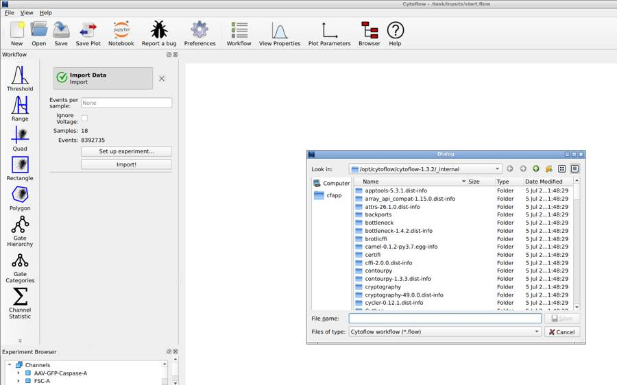
cd /task; cu click 1038 744; cu paste "/task/outputs/workflow.flow"; sleep 0.5; cu key Return; sleep 2; ls -la outputs; cu click 652 78; sleep 2; cu screenshot /tmp/screen.png
{
"file_path": "/tmp/screen.png"
}total 20 drwxrwsrwx 2 agent task 4096 Nov 10 19:15 . drwxr-xr-x 4 root root 4096 Nov 5 22:25 .. -rw-rw-r-- 1 cfapp task 11240 Nov 10 19:15 workflow.flow /tmp/screen.png

which xdotool wmctrl xwininfo xprop 2>&1; echo $DISPLAY; cu --help 2>&1 | head -30
/usr/bin/xdotool
/usr/bin/xwininfo
/usr/bin/xprop
:1
# Computer-use helper: the agent's only way to act on the screen.
# cu screenshot [path] -> PNG of the screen (default /tmp/screen.png); prints path
# cu click X Y [left|right|double]
# cu move X Y | cu drag X1 Y1 X2 Y2 | cu scroll X Y up|down [N]
# cu type "text" (keystrokes) | cu paste "text" (clipboard) | cu key KEYS (e.g. ctrl+s, Return)
# cu cursor -> current mouse position
export DISPLAY=${DISPLAY:-:1}
cmd=$1; shiftxwininfo -root -tree 2>/dev/null | grep -i -E "cytoflow|Cytometry" | head
0xe00025 "cytoflow": ("cytoflow" "cytoflow") 304x168+7+41 +7+41
0xe00008 "cytoflow": () 1x1+0+0 +0+0
0xe00004 "Qt Selection Owner for cytoflow": () 3x3+0+0 +0+0
0xe00006 "Cytoflow - /task/outputs/workflow.flow": ("cytoflow" "cytoflow") 2082x1171+1+20 +1+20cd /task; cu click 600 9 double; sleep 2; xwininfo -root -tree 2>/dev/null | grep -E "Cytoflow -"; cu screenshot /tmp/screen.png
{
"file_path": "/tmp/screen.png"
} 0xe00006 "Cytoflow - /task/outputs/workflow.flow": ("cytoflow" "cytoflow") 1440x881+0+19 +0+19
/tmp/screen.png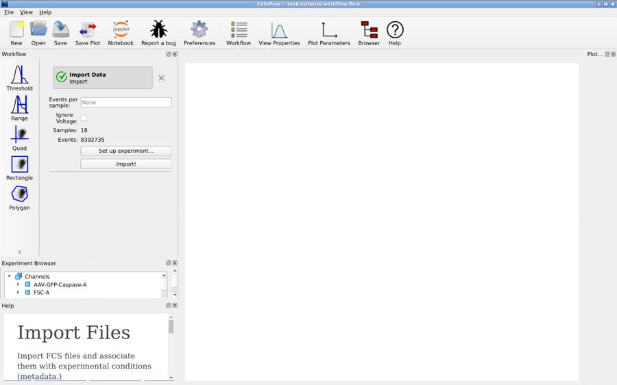
cd /task; cu click 408 713; sleep 1; cu click 408 614; sleep 1; cu click 651 77; sleep 2; cu screenshot /tmp/screen.png
{
"file_path": "/tmp/screen.png"
}/tmp/screen.png
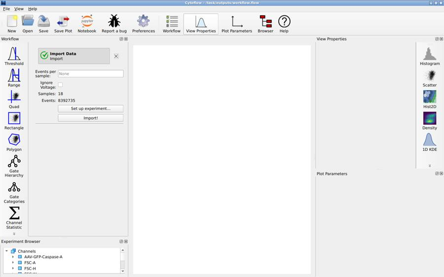
cd /task; cu click 1393 392; sleep 3; cu screenshot /tmp/screen.png
{
"file_path": "/tmp/screen.png"
}/tmp/screen.png
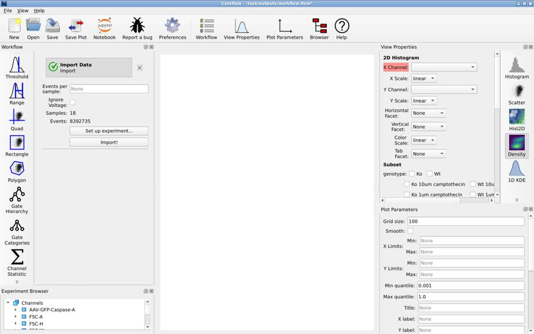
cd /task; cu click 1196 181; sleep 1; cu screenshot /tmp/screen.png
{
"file_path": "/tmp/screen.png"
}/tmp/screen.png
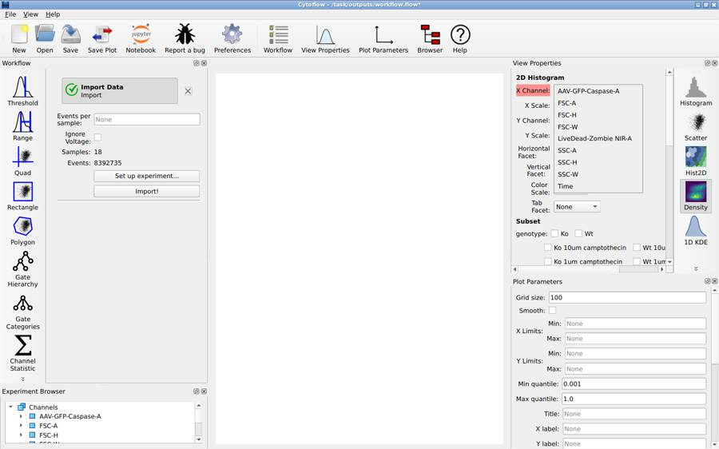
cd /task; cu click 1135 206; sleep 1; cu click 1196 241; sleep 1; cu screenshot /tmp/screen.png
{
"file_path": "/tmp/screen.png"
}/tmp/screen.png
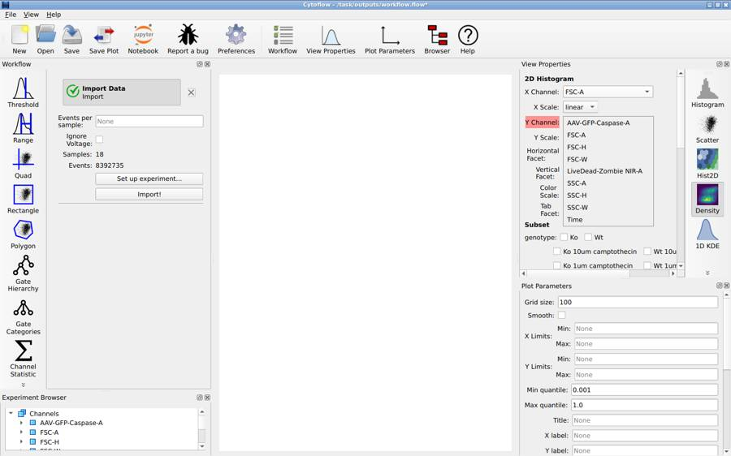
cd /task; cu click 1135 361; sleep 25; cu screenshot /tmp/screen.png
{
"file_path": "/tmp/screen.png"
}/tmp/screen.png
cd /task; cu click 1143 377; sleep 1; cu screenshot /tmp/screen.png
{
"file_path": "/tmp/screen.png"
}/tmp/screen.png
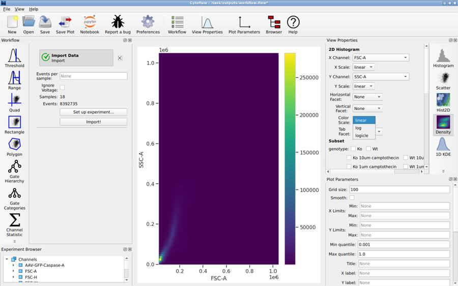
cd /task; cu click 1127 402; sleep 25; cu screenshot /tmp/screen.png
{
"file_path": "/tmp/screen.png"
}/tmp/screen.png
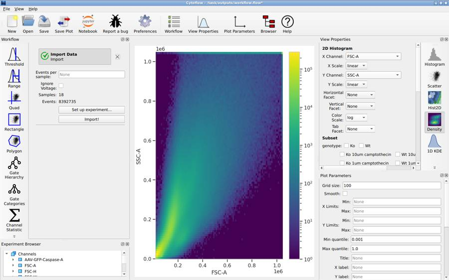
cd /task; cu click 1143 211; sleep 1; cu click 1127 236; sleep 2; cu click 1143 271; sleep 1; cu click 1127 296; sleep 30; cu screenshot /tmp/screen.png
{
"file_path": "/tmp/screen.png"
}/tmp/screen.png
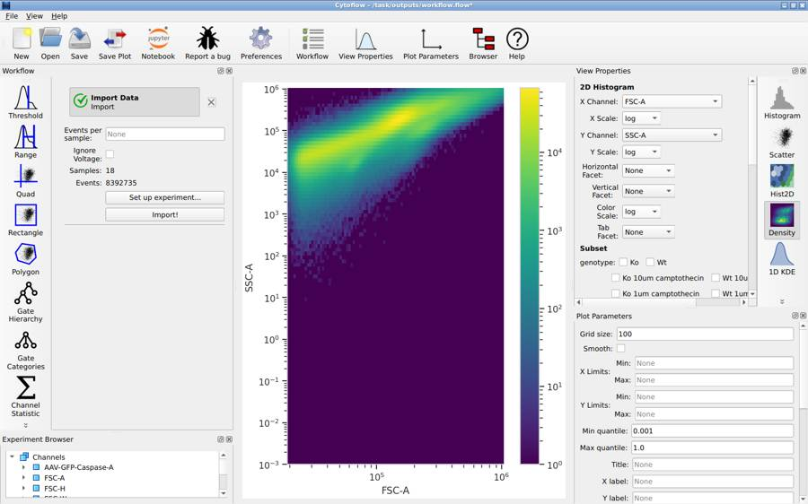
cd /task; cu click 1272 708; cu type "1000"; cu key Return; sleep 30; cu screenshot /tmp/screen.png
{
"file_path": "/tmp/screen.png"
}/tmp/screen.png
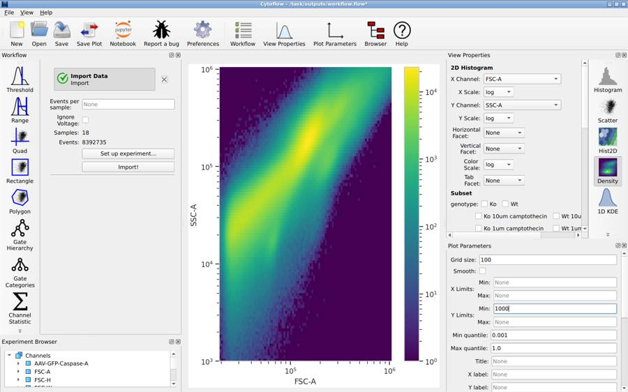
cd /task; cu click 1155 414; sleep 1; cu screenshot /tmp/screen.png
{
"file_path": "/tmp/screen.png"
}/tmp/screen.png
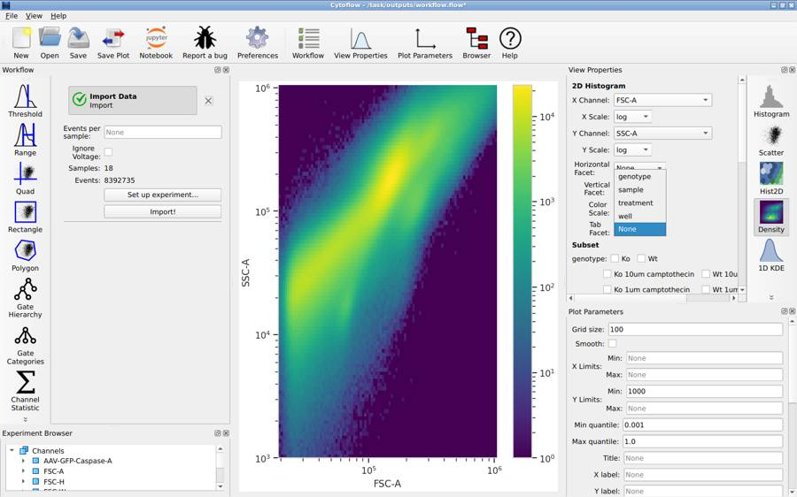
cd /task; cu click 1140 343; sleep 20; cu screenshot /tmp/screen.png
{
"file_path": "/tmp/screen.png"
}/tmp/screen.png
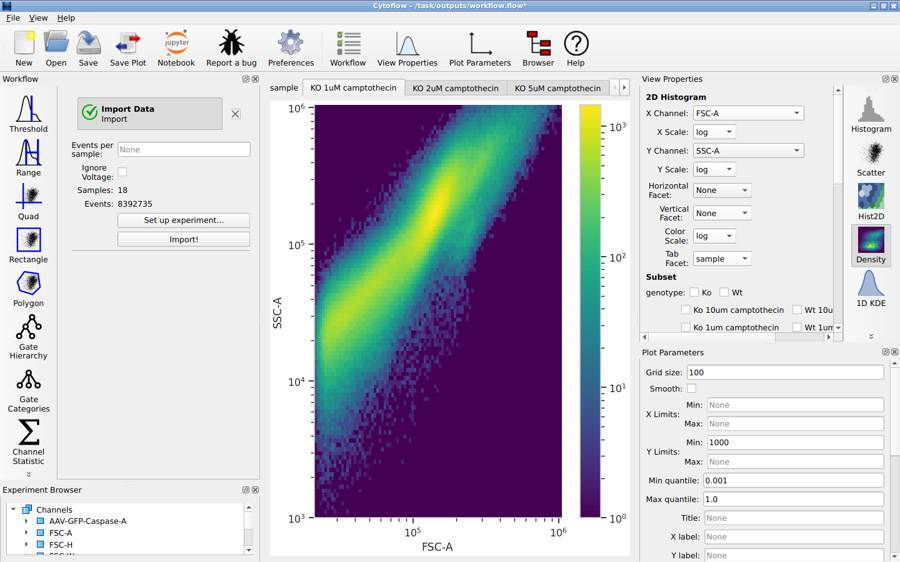
cd /task; cu click 45 460; sleep 3; cu screenshot /tmp/screen.png
{
"file_path": "/tmp/screen.png"
}/tmp/screen.png
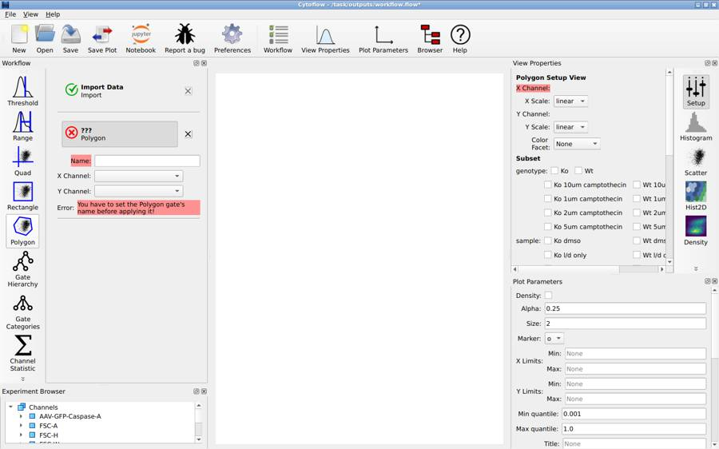
cd /task; cu click 1098 592; sleep 1; cu click 1143 202; sleep 1; cu click 1127 227; sleep 1; cu click 1143 254; sleep 1; cu click 1127 279; sleep 1; cu click 294 322; cu type "Cells"; cu key Return; sleep 1; cu click 277 352; sleep 1; cu screenshot /tmp/screen.png
{
"file_path": "/tmp/screen.png"
}/tmp/screen.png
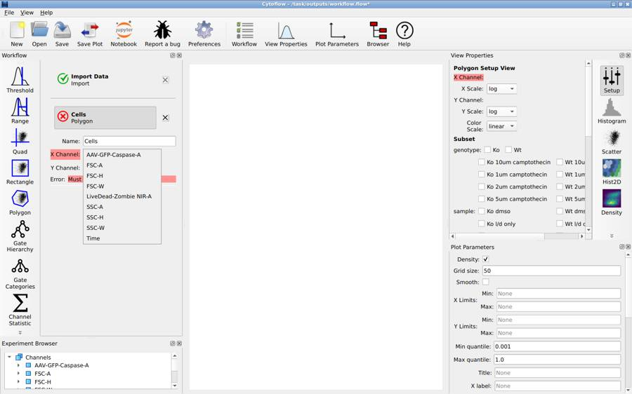
cd /task; cu click 215 377; sleep 1; cu click 277 383; sleep 1; cu screenshot /tmp/screen.png
{
"file_path": "/tmp/screen.png"
}/tmp/screen.png
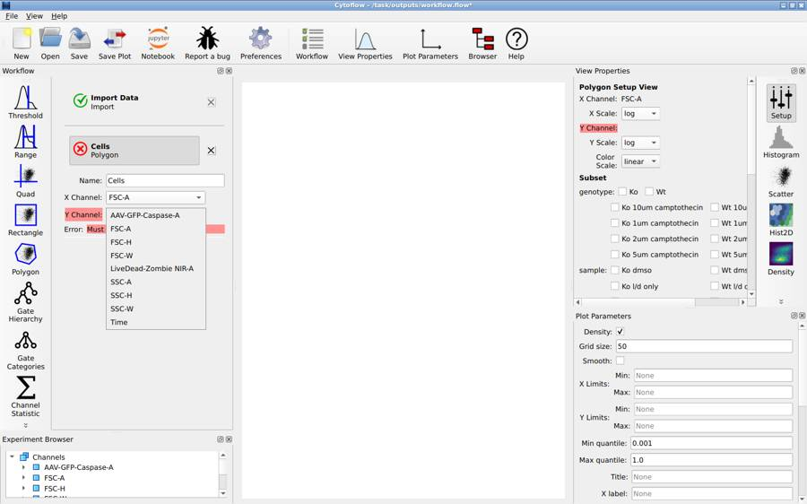
cd /task; cu click 215 503; sleep 2; cu click 1272 730; cu type "3000"; cu key Return; sleep 1; cu click 1143 288; sleep 1; cu click 1127 313; sleep 40; cu screenshot /tmp/screen.png
{
"file_path": "/tmp/screen.png"
}/tmp/screen.png
cd /task; for p in "685 495" "580 425" "610 330" "700 200" "780 168" "888 168" "888 330"; do cu click $p; sleep 1.5; done; cu click 780 470 double; sleep 45; cu screenshot /tmp/screen.png
{
"file_path": "/tmp/screen.png"
}/tmp/screen.png
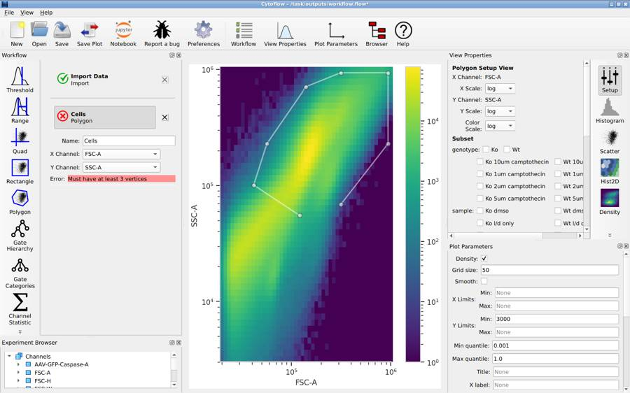
cd /task; cu click 685 494; sleep 40; cu screenshot /tmp/screen.png
{
"file_path": "/tmp/screen.png"
}/tmp/screen.png
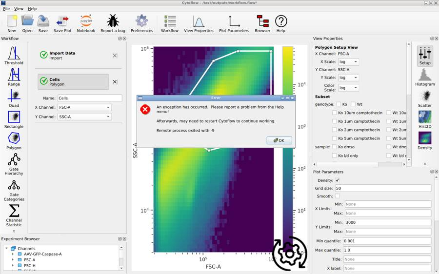
free -m; ps aux --sort=-rss | head -8 | cut -c1-250; dmesg 2>/dev/null | tail -5; cat /sys/fs/cgroup/memory.max 2>/dev/null; cat /sys/fs/cgroup/memory.current 2>/dev/null; cat /sys/fs/cgroup/memory.events 2>/dev/null
Exit code 1
total used free shared buff/cache available
Mem: 7949 936 6868 15 380 7013
Swap: 0 0 0
USER PID %CPU %MEM VSZ RSS TTY STAT START TIME COMMAND
cfapp 842 0.8 4.7 3592884 382880 ? Sl 19:13 0:05 /opt/cytoflow/cytoflow-1.3.2/cytoflow
root 1021 1.1 2.7 5688524 223700 ? Sl 19:13 0:06 claude --verbose --output-format=stream-json --effort high --model claude-fable-5-2 --permission-mode=bypassPermissions --print
root 819 0.0 0.5 233808 41872 ? S 19:13 0:00 Xvfb :1 -screen 0 1440x900x24 -nolisten tcp
root 828 0.0 0.2 58956 23180 ? S 19:13 0:00 /usr/bin/python3 /usr/bin/websockify --web=/usr/share/novnc 6080 localhost:5900
cfapp 860 0.0 0.2 84344 22092 ? S 19:13 0:00 /opt/cytoflow/cytoflow-1.3.2/cytoflow -B -S -I -c from multiprocessing.resource_tracker import main;main(9)
cfapp 928 0.0 0.2 5238912 20200 ? Sl 19:13 0:00 /opt/cytoflow/cytoflow-1.3.2/_internal/PyQt5/Qt5/libexec/QtWebEngineProcess --type=zygote --application-name=cytoflow --webengine-schemes=qrc:sLV --lang=en
agent 836 0.0 0.1 143092 11680 ? Sl 19:13 0:00 openbox
[ 575.744574] [ 1021] 0 1021 1422131 41152 41150 2 0 1216512 0 0 claude
[ 575.744620] [ 1489] 0 1489 1224 93 91 2 0 45056 0 0 bash
[ 575.744659] [ 1493] 0 1493 784 28 27 1 0 40960 0 0 sleep
[ 575.744698] oom-kill:constraint=CONSTRAINT_NONE,nodemask=(null),cpuset=/,mems_allowed=0,global_oom,task_memcg=/,task=cytoflow,pid=862,uid=1002
[ 575.744790] Out of memory: Killed process 862 (cytoflow) total-vm:9098296kB, anon-rss:7297560kB, file-rss:8kB, shmem-rss:28kB, UID:1002 pgtables:14924kB oom_score_adj:0ps -ef | cut -c1-200; whoami; ls /opt/cytoflow /opt 2>/dev/null; cat $(which cu) | head -60
UID PID PPID C STIME TTY TIME CMD root 1 0 0 19:13 ? 00:00:00 /__modal/runch-agent root 2 0 0 19:13 ? 00:00:00 [kthreadd] root 3 2 0 19:13 ? 00:00:00 [pool_workqueue_release] root 4 2 0 19:13 ? 00:00:00 [kworker/R-rcu_gp] root 5 2 0 19:13 ? 00:00:00 [kworker/R-sync_wq] root 6 2 0 19:13 ? 00:00:00 [kworker/R-kvfree_rcu_reclaim] root 7 2 0 19:13 ? 00:00:00 [kworker/R-slub_flushwq] root 8 2 0 19:13 ? 00:00:00 [kworker/R-netns] root 10 2 0 19:13 ? 00:00:00 [kworker/0:0H-kblockd] root 11 2 0 19:13 ? 00:00:00 [kworker/0:1-events] root 12 2 0 19:13 ? 00:00:00 [kworker/u16:0-events_unbound] root 13 2 0 19:13 ? 00:00:00 [kworker/R-mm_percpu_wq] root 14 2 0 19:13 ? 00:00:00 [ksoftirqd/0] root 15 2 0 19:13 ? 00:00:00 [rcu_sched] root 16 2 0 19:13 ? 00:00:00 [rcu_exp_par_gp_kthread_worker/0] root 17 2 0 19:13 ? 00:00:00 [rcu_exp_gp_kthread_worker] root 18 2 0 19:13 ? 00:00:00 [migration/0] root 19 2 0 19:13 ? 00:00:00 [cpuhp/0] root 20 2 0 19:13 ? 00:00:00 [cpuhp/1] root 21 2 0 19:13 ? 00:00:00 [migration/1] root 22 2 0 19:13 ? 00:00:00 [ksoftirqd/1] root 24 2 0 19:13 ? 00:00:00 [kworker/1:0H-kblockd] root 25 2 0 19:13 ? 00:00:00 [cpuhp/2] root 26 2 0 19:13 ? 00:00:00 [migration/2] root 27 2 0 19:13 ? 00:00:00 [ksoftirqd/2] root 29 2 0 19:13 ? 00:00:00 [kworker/2:0H-kblockd] root 30 2 0 19:13 ? 00:00:00 [cpuhp/3] root 31 2 0 19:13 ? 00:00:00 [migration/3] root 32 2 0 19:13 ? 00:00:00 [ksoftirqd/3] root 34 2 0 19:13 ? 00:00:00 [kworker/3:0H-kblockd] root 36 2 0 19:13 ? 00:00:00 [kworker/u16:1-events_unbound] root 39 2 0 19:13 ? 00:00:00 [kdevtmpfs] root 40 2 0 19:13 ? 00:00:00 [kworker/R-inet_frag_wq] root 41 2 0 19:13 ? 00:00:00 [rcu_tasks_kthread] root 42 2 0 19:13 ? 00:00:00 [kauditd] root 43 2 0 19:13 ? 00:00:00 [oom_reaper] root 44 2 0 19:13 ? 00:00:00 [kworker/R-writeback] root 45 2 0 19:13 ? 00:00:00 [kcompactd0] root 46 2 0 19:13 ? 00:00:00 [ksmd] root 47 2 0 19:13 ? 00:00:00 [khugepaged] root 48 2 0 19:13 ? 00:00:00 [kworker/R-kblockd] root 49 2 0 19:13 ? 00:00:00 [kworker/R-kintegrityd] root 50 2 0 19:13 ? 00:00:00 [kworker/1:1-events_long] root 51 2 0 19:13 ? 00:00:00 [watchdogd] root 52 2 0 19:13 ? 00:00:00 [kworker/R-quota_events_unbound] root 79 2 0 19:13 ? 00:00:00 [kswapd0] root 86 2 0 19:13 ? 00:00:00 [kworker/R-xfsalloc] root 87 2 0 19:13 ? 00:00:00 [kworker/R-xfs_mru_cache] root 88 2 0 19:13 ? 00:00:00 [kworker/u17:0] root 89 2 0 19:13 ? 00:00:00 [kworker/R-cryptd] root 91 2 0 19:13 ? 00:00:00 [kworker/R-kthrotld] root 99 2 0 19:13 ? 00:00:00 [irq/25-ACPI:Ged] root 117 2 0 19:13 ? 00:00:00 [kworker/R-acpi_thermal_pm] root 129 2 0 19:13 ? 00:00:00 [kworker/2:1-events_long] root 139 2 0 19:13 ? 00:00:00 [kworker/3:1-mm_percpu_wq] root 175 2 0 19:13 ? 00:00:00 [khvcd] root 189 2 0 19:13 ? 00:00:00 [hwrng] root 255 2 0 19:13 ? 00:00:00 [kworker/R-nvme-wq] root 257 2 0 19:13 ? 00:00:00 [kworker/R-nvme-reset-wq] root 258 2 0 19:13 ? 00:00:00 [kworker/R-nvme-delete-wq] root 283 2 0 19:13 ? 00:00:00 [kworker/R-vfio-irqfd-cleanup] root 294 2 0 19:13 ? 00:00:00 [kworker/R-kmpathd] root 295 2 0 19:13 ? 00:00:00 [kworker/R-kmpath_handlerd] root 330 2 0 19:13 ? 00:00:00 [kworker/R-tls-strp] root 331 2 0 19:13 ? 00:00:00 [kworker/R-mld] root 332 2 0 19:13 ? 00:00:00 [kworker/R-ipv6_addrconf] root 675 2 0 19:13 ? 00:00:00 [kworker/u16:4-flush-254:0] root 801 2 0 19:13 ? 00:00:00 [jbd2/vda-8] root 802 2 0 19:13 ? 00:00:00 [kworker/R-ext4-rsv-conversion] root 810 1 0 19:13 ? 00:00:00 /usr/bin/tini -- /entrypoint.sh sh -c sleep infinity root 812 810 0 19:13 ? 00:00:00 /bin/bash /entrypoint.sh sh -c sleep infinity root 813 2 0 19:13 ? 00:00:00 [kworker/1:1H-kblockd] root 819 812 0 19:13 ? 00:00:00 Xvfb :1 -screen 0 1440x900x24 -nolisten tcp root 826 812 0 19:13 ? 00:00:00 /bin/bash /entrypoint.sh sh -c sleep infinity root 827 812 0 19:13 ? 00:00:00 x11vnc -display :1 -forever -shared -nopw -quiet -rfbport 5900 root 828 812 0 19:13 ? 00:00:00 /usr/bin/python3 /usr/bin/websockify --web=/usr/share/novnc 6080 localhost:5900 root 829 826 0 19:13 ? 00:00:00 runuser -u agent -- env DISPLAY=:1 HOME=/home/agent LANG=C.UTF-8 LC_ALL=C.UTF-8 openbox root 833 812 0 19:13 ? 00:00:00 /bin/bash /entrypoint.sh sh -c sleep infinity root 834 833 0 19:13 ? 00:00:00 runuser -u cfapp -- env DISPLAY=:1 HOME=/home/cfapp XDG_RUNTIME_DIR=/tmp/runtime-cfapp LANG=C.UTF-8 LC_ALL=C.UTF-8 bash -c umask 002; cd /task; exec sta cfapp 835 834 0 19:13 ? 00:00:00 /bin/bash /usr/local/bin/start-cytoflow agent 836 829 0 19:13 ? 00:00:00 openbox cfapp … [4,243 more characters not shown]
cat /usr/local/bin/start-cytoflow; echo ----; sed -n 1,80p /entrypoint.sh
#!/bin/bash
# Launch Cytoflow full-screen-ish; restart it if the agent closes it.
BIN=$(find /opt/cytoflow -maxdepth 3 -type f -name 'cytoflow' -perm -u+x | head -1)
[ -z "$BIN" ] && { echo "cytoflow binary not found under /opt/cytoflow"; exit 1; }
while true; do
"$BIN" >/tmp/cytoflow.log 2>&1
sleep 1
done
----
#!/bin/bash
# Starts: virtual screen -> window manager -> VNC/noVNC (for human viewing) -> Cytoflow.
set -e
# Locale must reach the GUI process explicitly (Modal does not propagate image ENV through runuser);
# without it Qt pops "failed to create compose table" and swallows keystrokes.
export LANG=C.UTF-8 LC_ALL=C.UTF-8
if [ "${OFFLINE:-1}" = "1" ]; then
# Block all outbound traffic except replies to inbound connections (so noVNC viewing still works).
if iptables -P OUTPUT DROP 2>/dev/null; then
iptables -A OUTPUT -o lo -j ACCEPT
iptables -A OUTPUT -m state --state ESTABLISHED,RELATED -j ACCEPT
echo "[env] offline mode: outbound network blocked"
else
echo "[env] WARNING: could not block network (run with --cap-add NET_ADMIN)"
fi
fi
# Bind-mounted outputs folder: make it writable by both the agent and the Cytoflow user.
chown agent:task /task/outputs 2>/dev/null; chmod 2777 /task/outputs 2>/dev/null || true
as_agent() { runuser -u agent -- env DISPLAY=$DISPLAY HOME=/home/agent LANG=$LANG LC_ALL=$LC_ALL "$@"; }
Xvfb $DISPLAY -screen 0 $SCREEN_GEOMETRY -nolisten tcp &
for i in $(seq 1 50); do xdpyinfo -display $DISPLAY >/dev/null 2>&1 && break; sleep 0.2; done
as_agent openbox &
x11vnc -display $DISPLAY -forever -shared -nopw -quiet -rfbport 5900 &
websockify --web=/usr/share/novnc 6080 localhost:5900 >/dev/null 2>&1 &
echo "[env] watch the screen at http://localhost:6080/vnc.html?autoconnect=1&resize=scale"
as_cfapp() { runuser -u cfapp -- env DISPLAY=$DISPLAY HOME=/home/cfapp XDG_RUNTIME_DIR=/tmp/runtime-cfapp LANG=$LANG LC_ALL=$LC_ALL "$@"; }
mkdir -p /tmp/runtime-cfapp && chown cfapp /tmp/runtime-cfapp && chmod 700 /tmp/runtime-cfapp
# umask 002: files Cytoflow saves into /task/outputs stay readable/writable by the agent.
# cd /task: Cytoflow's open/save dialogs start in the task folder.
as_cfapp bash -c "umask 002; cd /task; exec start-cytoflow" &
waitthinking
Cytoflow's worker ran out of memory on the 8.4M-event file right after the polygon closed, so I'm saving the gate and restarting it. Next I'll design gates on a subsample, then switch back to all events for the final counts.
cd /task; cu click 916 461; sleep 1; cu key ctrl+s; sleep 3; cu screenshot /tmp/screen.png; ls -la outputs; grep -n -A30 "polygon" outputs/workflow.flow | head -60
{
"file_path": "/tmp/screen.png"
}/tmp/screen.png total 32 drwxrwsrwx 2 agent task 4096 Nov 10 19:15 . drwxr-xr-x 4 root root 4096 Nov 5 22:25 .. -rw-rw-r-- 1 cfapp task 23347 Nov 10 19:24 workflow.flow 784: current_view: &id004 !polygon-view;3 785- current_plot: null 786- huefacet: '' 787- huescale: log 788: op: &id003 !polygon;1 789- name: Cells 790- vertices: 791- - !!python/tuple 792- - 121575.71009153235 793- - 54657.64013165258 794- - !!python/tuple 795- - 41752.035547896754 796- - 100017.4191997087 797- - !!python/tuple 798- - 56748.44261901909 799- - 227249.69699748652 800- - !!python/tuple 801- - 140989.60526455208 802- - 701619.6747561877 803- - !!python/tuple 804- - 318462.74440517597 805- - 927944.8666713479 806- - !!python/tuple 807- - 957227.1265266228 808- - 927944.8666713479 809- - !!python/tuple 810- - 957227.1265266228 811- - 227249.69699748652 812- - !!python/tuple 813- - 318462.74440517597 814- - 67866.23843151265 815- - !!python/tuple 816- - 318462.74440517597 817- - 67866.23843151265 818- xchannel: FSC-A -- 822: plot_params: !polygon-params;1 823- alpha: 0.25 824- col_wrap: null 825- density: true 826- despine: true 827- gridsize: 50 828- huelabel: '' 829- legend: true 830- marker: o 831- max_quantile: 1.0 832- min_quantile: 0.001 833- s: 2 834- sharex: true 835- sharey: true 836- smoothed: false 837- smoothed_sigma: 1.0 838- sns_context: notebook 839- sns_style: whitegrid 840- title: '' 841- xlabel: '' 842- xlim: *id002 843- ylabel: '' 844- ylim: !!python/tuple 845- - 3000.0
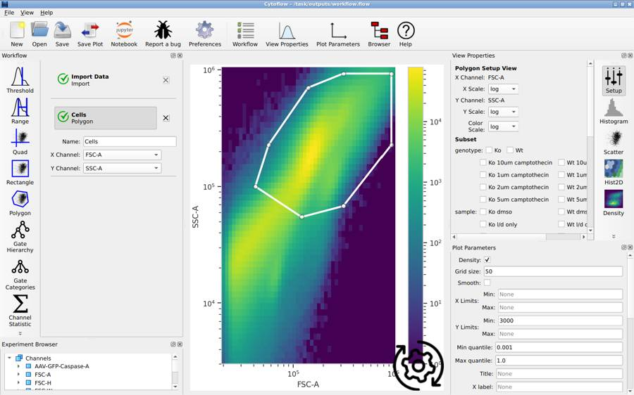
cd /task; cu click 21 29; sleep 1; cu click 47 196; sleep 6; cu screenshot /tmp/screen.png; ps aux | grep -c "[c]ytoflow-1.3.2/cytoflow"
{
"file_path": "/tmp/screen.png"
}/tmp/screen.png 3

cd /task; sleep 15; cu screenshot /tmp/screen.png; xwininfo -root -tree 2>/dev/null | grep -i -E "cytoflow" | head
{
"file_path": "/tmp/screen.png"
}/tmp/screen.png
0xe00008 "cytoflow": () 1x1+0+0 +0+0
0xe00004 "Qt Selection Owner for cytoflow": () 3x3+0+0 +0+0
0xe00006 "Cytometry analysis - Cytoflow": ("cytoflow" "cytoflow") 2082x1171+1+20 +1+20
cd /task; cu click 600 9 double; sleep 2; cu key ctrl+o; sleep 2; cu screenshot /tmp/screen.png
{
"file_path": "/tmp/screen.png"
}/tmp/screen.png

cd /task; cu click 706 576; cu paste "/task/outputs/workflow.flow"; sleep 0.5; cu key Return; sleep 3; cu screenshot /tmp/screen.png
{
"file_path": "/tmp/screen.png"
}/tmp/screen.png

cd /task; cu click 828 427; sleep 2; cu click 408 713; sleep 1; cu click 240 181; sleep 2; cu screenshot /tmp/screen.png
{
"file_path": "/tmp/screen.png"
}/tmp/screen.png
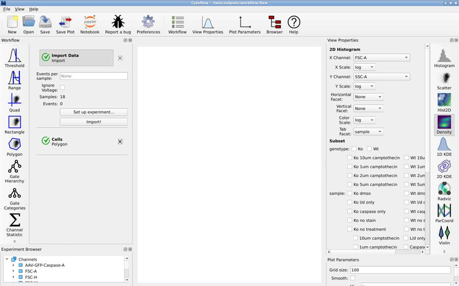
cd /task; cu click 294 239; cu type "30000"; cu key Return; sleep 1; cu click 294 383; sleep 30; cu screenshot /tmp/screen.png; ps aux --sort=-rss | grep "[c]ytoflow" | awk '{print $2, $6/1024 " MB"}' | head -3{
"file_path": "/tmp/screen.png"
}/tmp/screen.png 1563 528.277 MB 1576 482.383 MB 1645 70.4609 MB
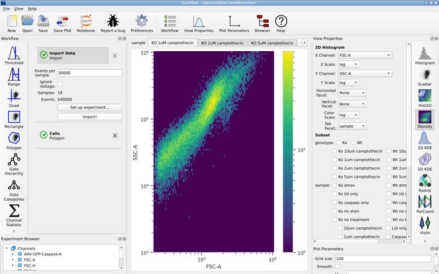
cd /task; cu click 240 445; sleep 4; cu click 45 460; sleep 3; cu screenshot /tmp/screen.png
{
"file_path": "/tmp/screen.png"
}/tmp/screen.png
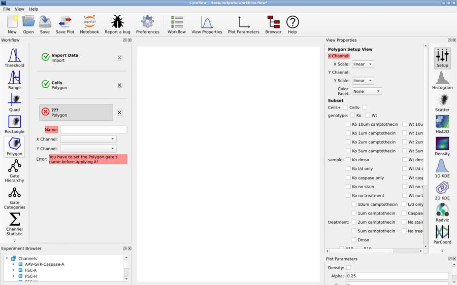
cd /task; cu click 1098 845; sleep 1; cu click 1087 339; sleep 1; cu click 1143 202; sleep 1; cu click 1127 227; sleep 1; cu click 1143 254; sleep 1; cu click 1127 279; sleep 1; cu click 294 409; cu type "Singlets"; cu key Return; sleep 1; cu click 277 439; sleep 1; cu click 215 464; sleep 2; cu click 277 469; sleep 1; cu click 215 518; sleep 15; cu screenshot /tmp/screen.png
{
"file_path": "/tmp/screen.png"
}/tmp/screen.png
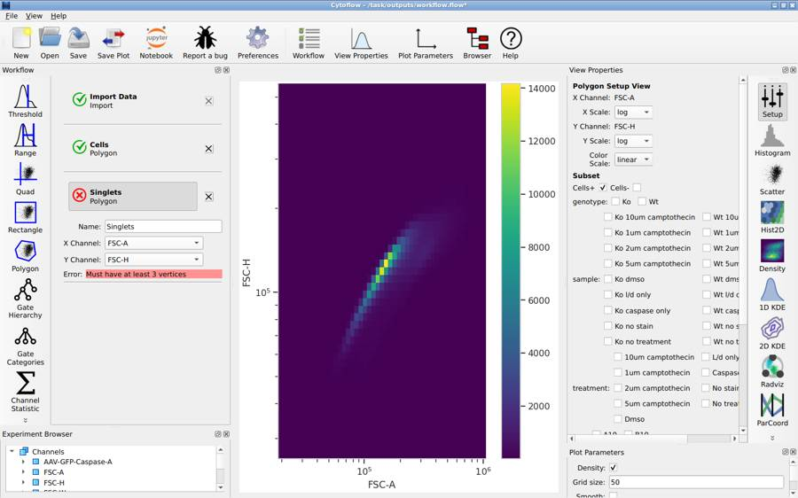
cd /task; cu drag 1232 803 1232 420; sleep 2; cu click 1143 288; sleep 1; cu click 1127 313; sleep 8; cu screenshot /tmp/screen.png
{
"file_path": "/tmp/screen.png"
}/tmp/screen.png
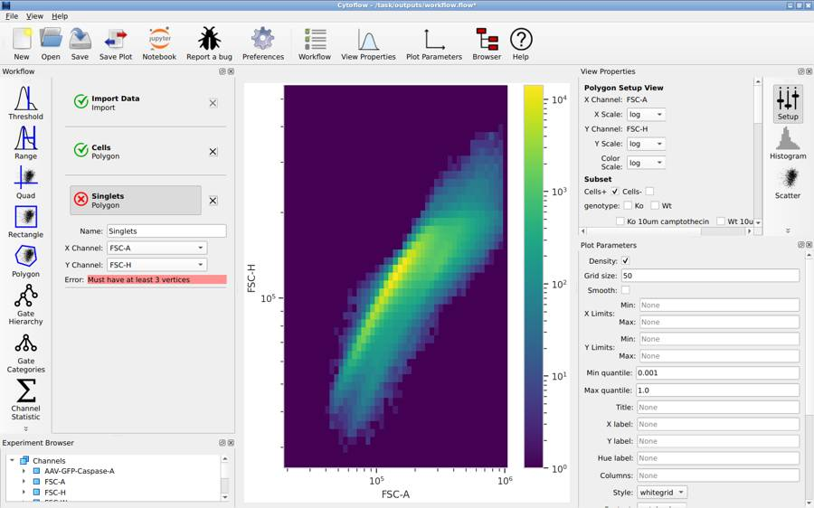
cd /task; cu click 1272 540; cu type "30000"; cu key Return; sleep 1; cu click 1272 570; cu type "1100000"; cu key Return; sleep 1; cu click 1272 600; cu type "10000"; cu key Return; sleep 1; cu click 1272 630; cu type "1100000"; cu key Return; sleep 10; cu screenshot /tmp/screen.png
{
"file_path": "/tmp/screen.png"
}/tmp/screen.png
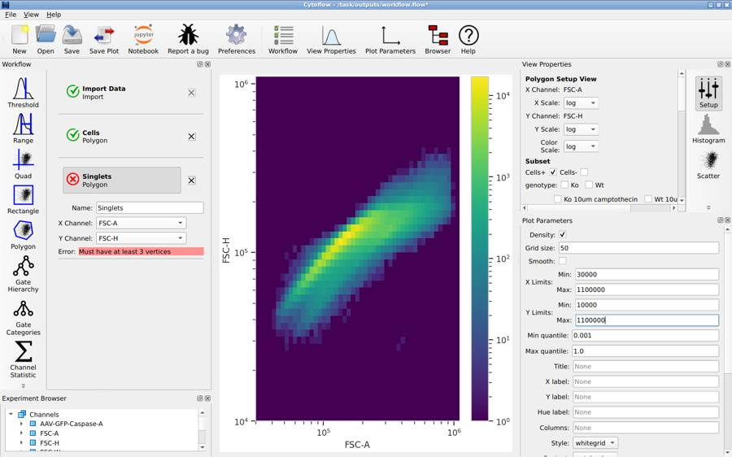
cd /task; cu click 1143 202; sleep 1; cu click 1127 203; sleep 1; cu click 1143 254; sleep 1; cu click 1127 255; sleep 1; cu click 1272 540; cu key ctrl+a; cu type "0"; cu key Return; sleep 1; cu click 1272 570; cu key ctrl+a; cu type "600000"; cu key Return; sleep 1; cu click 1272 600; cu key ctrl+a; cu type "0"; cu key Return; sleep 1; cu click 1272 630; cu key ctrl+a; cu type "400000"; cu key Return; sleep 10; cu screenshot /tmp/screen.png
{
"file_path": "/tmp/screen.png"
}/tmp/screen.png
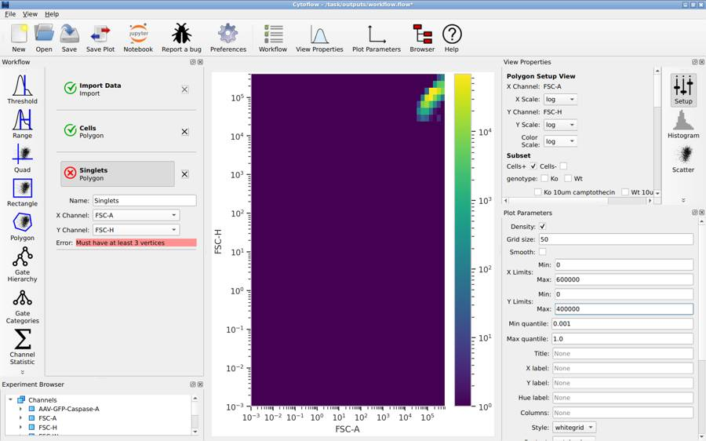
cd /task; cu click 1143 202; sleep 1; cu screenshot /tmp/screen.png
{
"file_path": "/tmp/screen.png"
}/tmp/screen.png
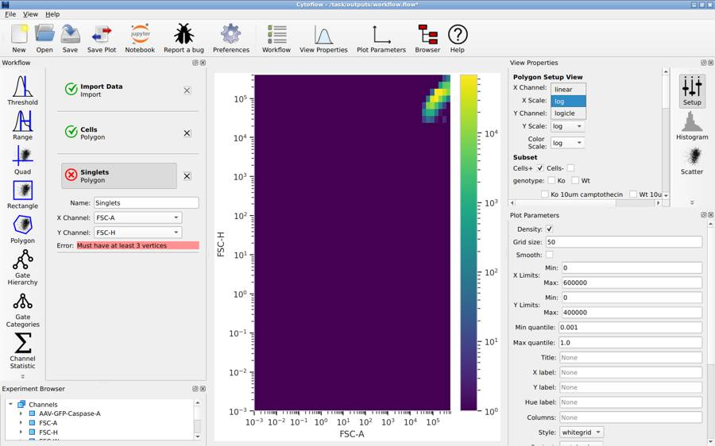
cd /task; cu click 1135 180; sleep 2; cu click 1143 254; sleep 1; cu click 1135 230; sleep 12; cu screenshot /tmp/screen.png
{
"file_path": "/tmp/screen.png"
}/tmp/screen.png
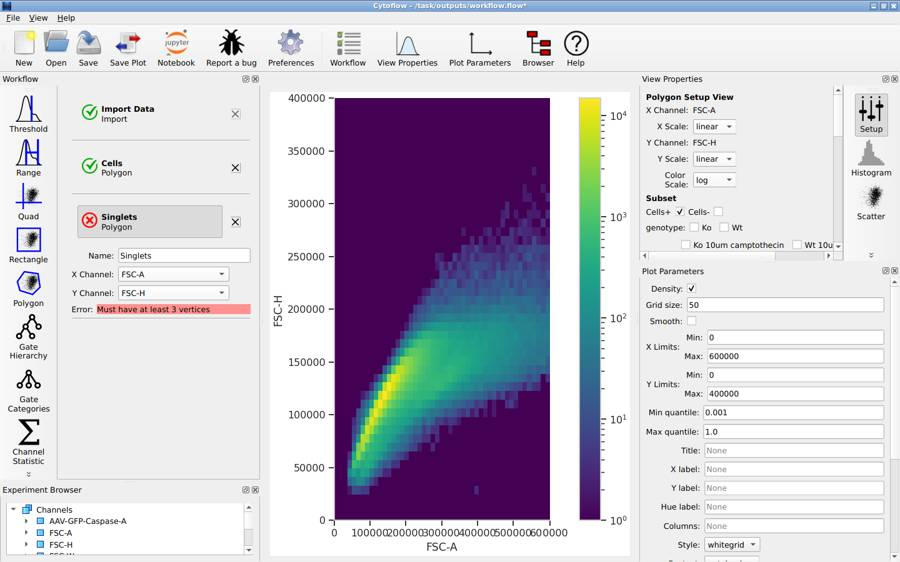
cd /task; for p in "552 775" "552 735" "583 655" "612 592" "642 530" "676 462" "705 470" "672 560" "642 622" "614 682" "588 740" "575 775"; do cu click $p; sleep 1.2; done; cu click 552 775; sleep 12; cu screenshot /tmp/screen.png
{
"file_path": "/tmp/screen.png"
}/tmp/screen.png
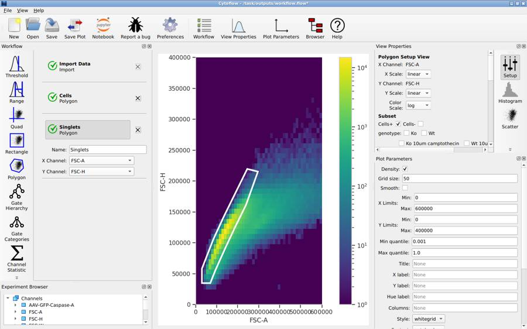
cd /task; cu key ctrl+s; sleep 2; cu drag 1232 421 1232 640; sleep 2; cu click 1393 252; sleep 3; cu screenshot /tmp/screen.png
{
"file_path": "/tmp/screen.png"
}/tmp/screen.png
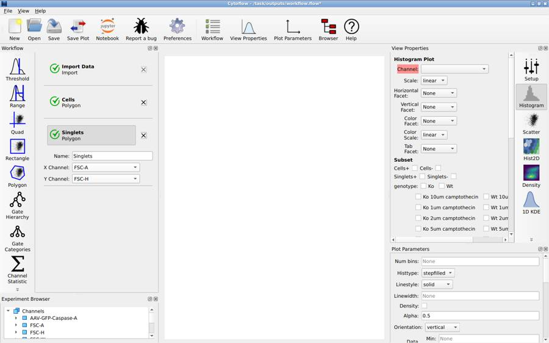
cd /task; cu click 1393 460; sleep 3; cu screenshot /tmp/screen.png
{
"file_path": "/tmp/screen.png"
}/tmp/screen.png
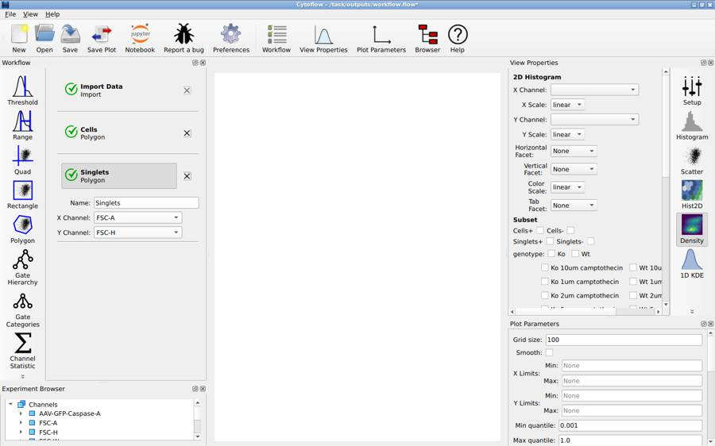
cd /task; cu click 1087 465; sleep 0.5; cu click 1107 487; sleep 0.5; cu click 1143 211; sleep 1; cu click 1135 259; sleep 1; cu click 1143 271; sleep 1; cu click 1135 319; sleep 1; cu click 1143 377; sleep 1; cu click 1135 401; sleep 1; cu click 1196 181; sleep 1; cu click 1160 182; sleep 1; cu click 1196 241; sleep 1; cu click 1160 337; sleep 1; cu click 1155 414; sleep 1; cu screenshot /tmp/screen.png
{
"file_path": "/tmp/screen.png"
}/tmp/screen.png
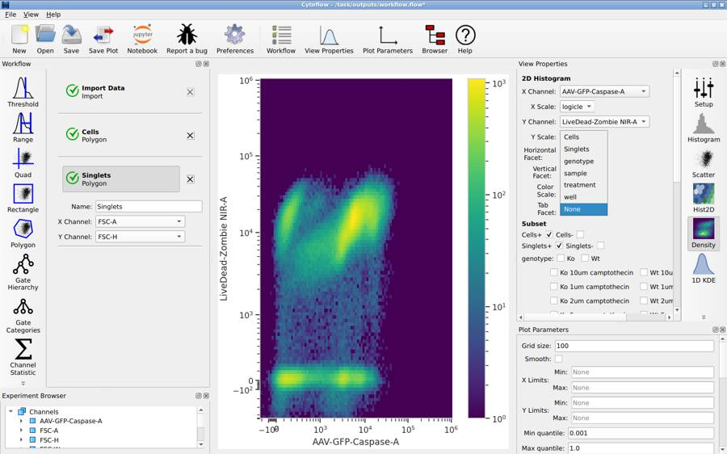
cd /task; cu click 1140 343; sleep 8; cu screenshot /tmp/screen.png
{
"file_path": "/tmp/screen.png"
}/tmp/screen.png
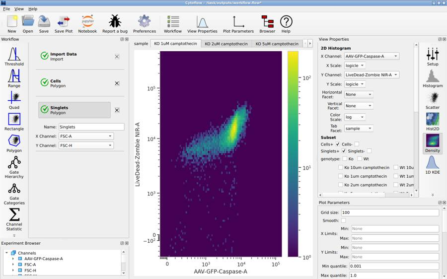
cd /task; cu click 1272 737; cu type "-300"; cu key Return; sleep 1; cu click 1272 768; cu type "1000000"; cu key Return; sleep 1; cu click 1272 798; cu type "-300"; cu key Return; sleep 1; cu click 1272 828; cu type "1000000"; cu key Return; sleep 8; cu screenshot /tmp/screen.png
{
"file_path": "/tmp/screen.png"
}/tmp/screen.png
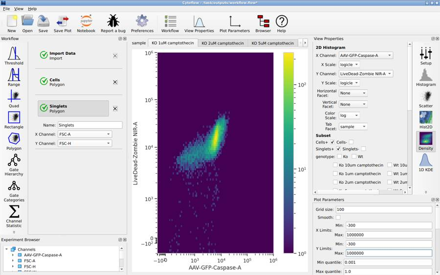
cd /task; python3 -c "import PIL; print(PIL.__version__)"; cu click 984 140; sleep 1; cu click 984 140; sleep 1; cu screenshot /tmp/screen.png
{
"file_path": "/tmp/screen.png"
}10.2.0 /tmp/screen.png

mkdir -p /tmp/tabs /tmp/work; cat > /tmp/work/tabs.sh <<'E'
#!/bin/bash
# usage: tabs.sh prefix [wait]
pre=$1; w=${2:-4}
cu click 984 140; cu click 984 140; cu click 984 140; cu click 984 140; cu click 984 140; cu click 984 140;cu click 984 140; cu click 984 140
sleep 0.5
cu click 565 141; sleep $w
for i in $(seq -w 1 18); do
cu screenshot /tmp/tabs/${pre}_$i.png >/dev/null
cu key Right; sleep $w
done
E
chmod +x /tmp/work/tabs.sh
cat > /tmp/work/montage.py <<'E'
import sys, glob
from PIL import Image
pre=sys.argv[1]; scale=float(sys.argv[2]) if len(sys.argv)>2 else 0.6
box=(432,125,1012,892)
files=sorted(glob.glob(f'/tmp/tabs/{pre}_*.png'))
crops=[Image.open(f).crop(box) for f in files]
w,h=crops[0].size; w2,h2=int(w*scale),int(h*scale)
per=6; cols=3
for k in range(0,len(crops),per):
grp=crops[k:k+per]
rows=(len(grp)+cols-1)//cols
M=Image.new('RGB',(cols*w2,rows*h2),'white')
for i,c in enumerate(grp):
M.paste(c.resize((w2,h2),Image.LANCZOS),((i%cols)*w2,(i//cols)*h2))
M.save(f'/tmp/tabs/{pre}_m{k//per}.png')
print(len(crops))
E
cd /task; /tmp/work/tabs.sh cz 4; python3 /tmp/work/montage.py cz 0.62{
"file_path": "/tmp/tabs/cz_m0.png"
}18
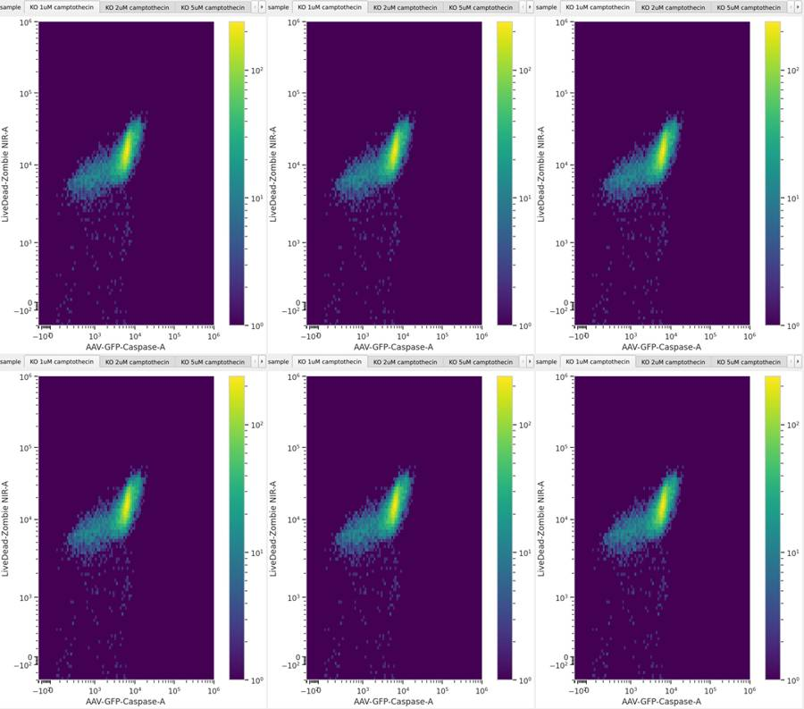
cd /task; cu click 998 140; sleep 1; cu screenshot /tmp/screen.png; python3 -c "
from PIL import Image
Image.open('/tmp/screen.png').crop((430,125,1012,160)).save('/tmp/tabbar.png')"{
"file_path": "/tmp/tabbar.png"
}/tmp/screen.png
cat > /tmp/work/tabs.sh <<'E'
#!/bin/bash
# usage: tabs.sh prefix [wait]
pre=$1; w=${2:-4}
rm -f /tmp/tabs/${pre}_*.png
for k in $(seq 1 20); do cu click 984 140; done
sleep 0.5
for i in $(seq -w 1 16); do
cu click 500 141; sleep $w
cu screenshot /tmp/tabs/${pre}_$i.png >/dev/null
cu click 998 140; sleep 0.4
done
# after 16 scrolls, bar is at its end: last three tabs visible
cu screenshot /tmp/tabs/bar_end.png >/dev/null
E
cd /task; /tmp/work/tabs.sh cz 3; python3 -c "
from PIL import Image
Image.open('/tmp/tabs/bar_end.png').crop((430,125,1012,160)).save('/tmp/tabbar.png')"{
"file_path": "/tmp/tabbar.png"
}(Bash completed with no output)
cd /task; cu click 730 141; sleep 3; cu screenshot /tmp/tabs/cz_17.png >/dev/null; cu click 890 141; sleep 3; cu screenshot /tmp/tabs/cz_18.png >/dev/null; python3 /tmp/work/montage.py cz 0.62
{
"file_path": "/tmp/tabs/cz_m0.png"
}{
"file_path": "/tmp/tabs/cz_m1.png"
}{
"file_path": "/tmp/tabs/cz_m2.png"
}18
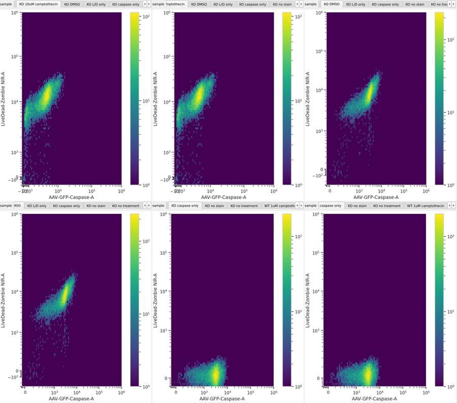
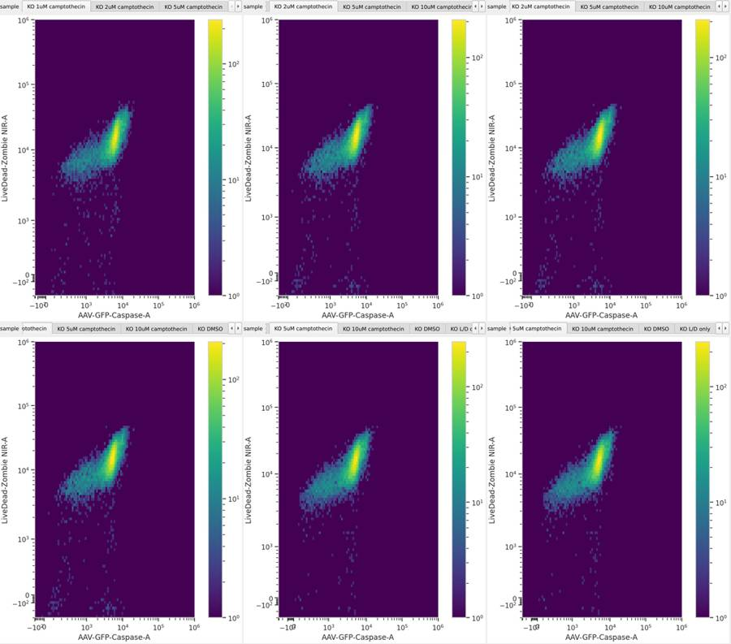
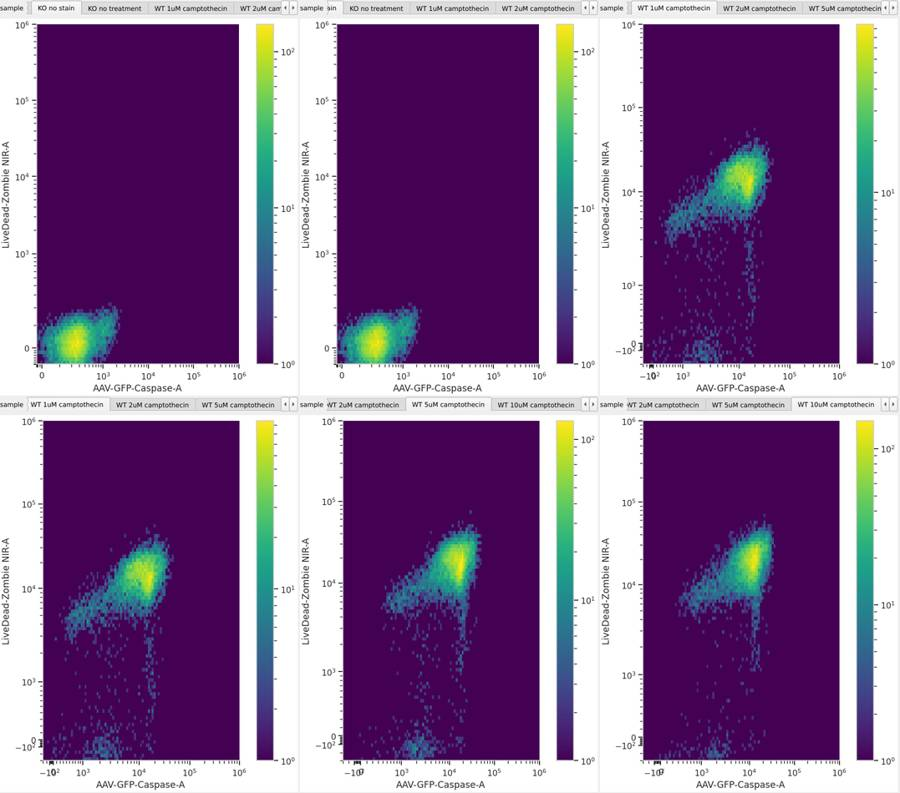
cd /task; cu click 1155 414; sleep 1; cu click 1140 486; sleep 3; cu click 1158 512; sleep 2; cu click 1155 304; sleep 1; cu screenshot /tmp/screen.png
{
"file_path": "/tmp/screen.png"
}/tmp/screen.png
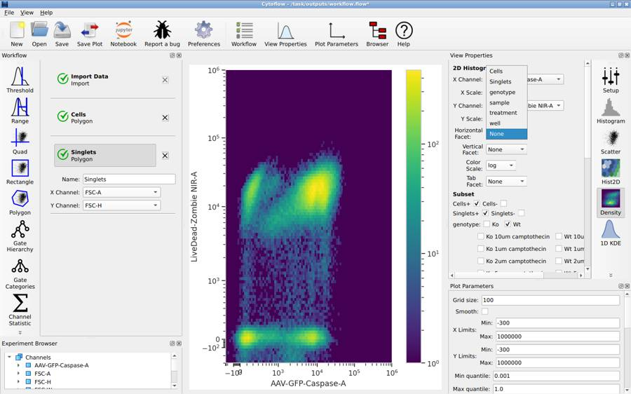
cd /task; cu click 1148 257; sleep 3; cu scroll 1230 780 down 5; sleep 1; cu screenshot /tmp/screen.png
{
"file_path": "/tmp/screen.png"
}/tmp/screen.png
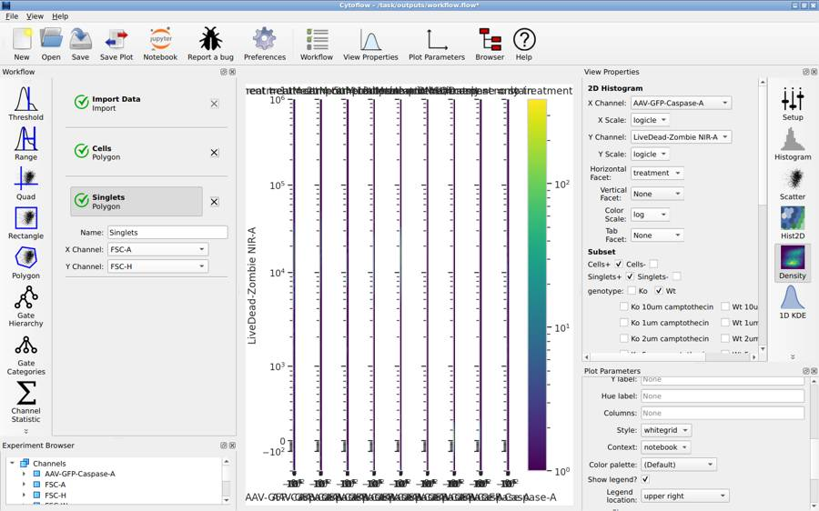
cd /task; cu click 1270 727; cu type "3"; cu key Return; sleep 10; cu screenshot /tmp/screen.png
{
"file_path": "/tmp/screen.png"
}/tmp/screen.png
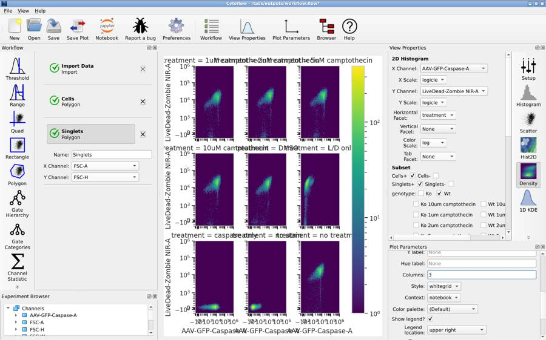
cd /task; cu click 1393 252; sleep 3; cu screenshot /tmp/screen.png
{
"file_path": "/tmp/screen.png"
}/tmp/screen.png
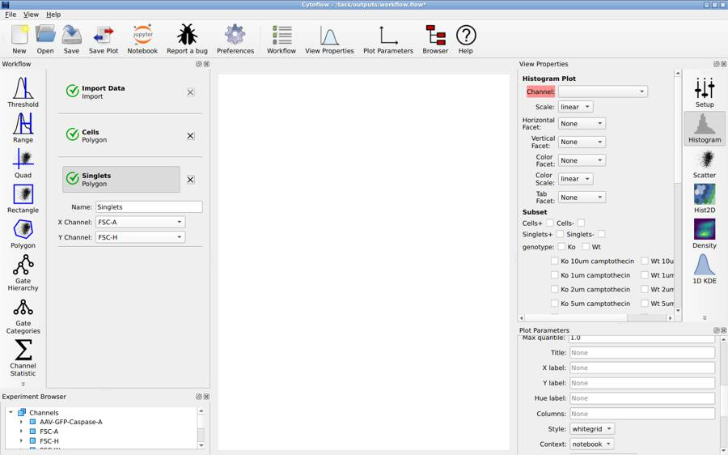
cd /task; cu click 1087 441; sleep 0.5; cu click 1107 463; sleep 0.5; cu click 1270 818; cu type "3"; cu key Return; sleep 0.5; cu click 1138 211; sleep 1; cu click 1135 259; sleep 1; cu click 1150 244; sleep 1; cu click 1148 196; sleep 1; cu click 1150 317; sleep 1; cu click 1148 221; sleep 1; cu click 1190 181; sleep 1; cu click 1160 277; sleep 12; cu screenshot /tmp/screen.png
{
"file_path": "/tmp/screen.png"
}/tmp/screen.png
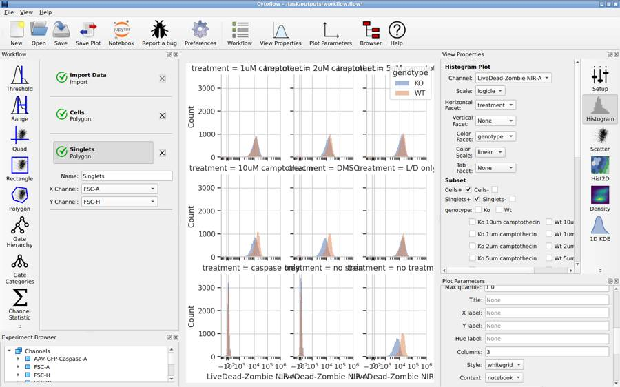
cd /task; cu click 1190 181; sleep 1; cu screenshot /tmp/s1.png >/dev/null; cu click 1160 85; sleep 1; cu screenshot /tmp/screen.png
{
"file_path": "/tmp/s1.png"
}/tmp/screen.png
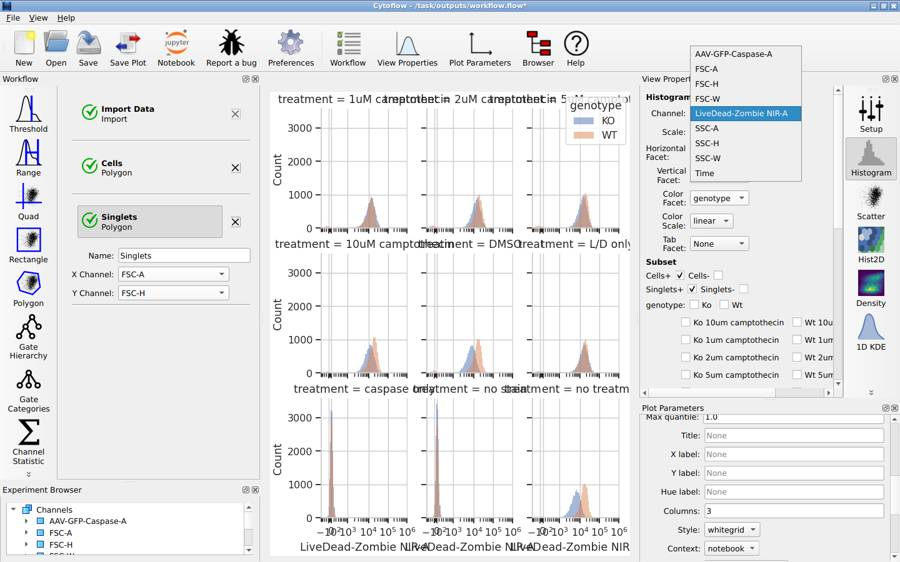
cd /task; sleep 6; cu screenshot /tmp/screen.png
{
"file_path": "/tmp/screen.png"
}/tmp/screen.png
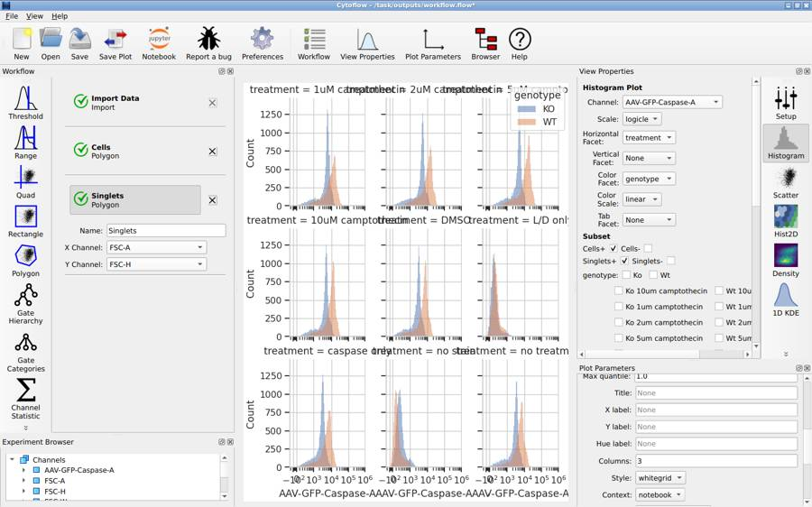
cd /task; cu click 45 250; sleep 3; cu screenshot /tmp/screen.png
{
"file_path": "/tmp/screen.png"
}/tmp/screen.png
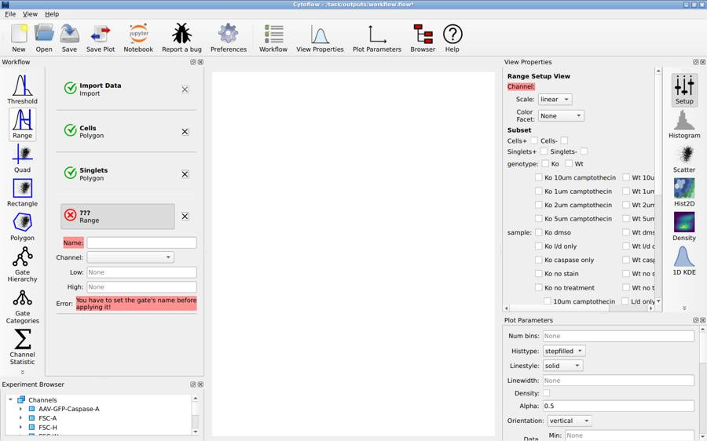
cd /task; cu click 288 495; cu type "Live"; cu key Return; sleep 0.5; cu click 1087 287; sleep 0.5; cu click 1107 309; sleep 0.5; cu click 1130 202; sleep 1; cu click 1125 250; sleep 1; cu click 1143 236; sleep 1; cu click 1140 188; sleep 1; cu click 1113 802; sleep 0.5; cu click 265 525; sleep 1; cu screenshot /tmp/s1.png >/dev/null; cu click 250 622; sleep 10; cu screenshot /tmp/screen.png
{
"file_path": "/tmp/screen.png"
}/tmp/screen.png
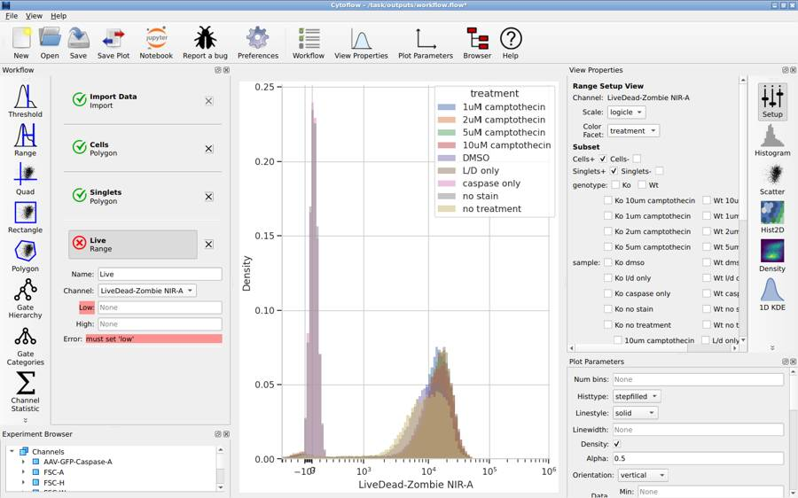
cd /task; cu click 288 555; cu type "-100000"; cu key Return; sleep 1; cu click 288 585; cu type "1000"; cu key Return; sleep 12; cu screenshot /tmp/screen.png
{
"file_path": "/tmp/screen.png"
}/tmp/screen.png
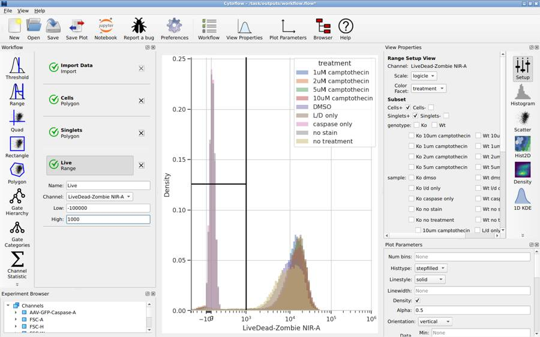
cd /task; cu click 45 180; sleep 3; cu screenshot /tmp/screen.png
{
"file_path": "/tmp/screen.png"
}/tmp/screen.png
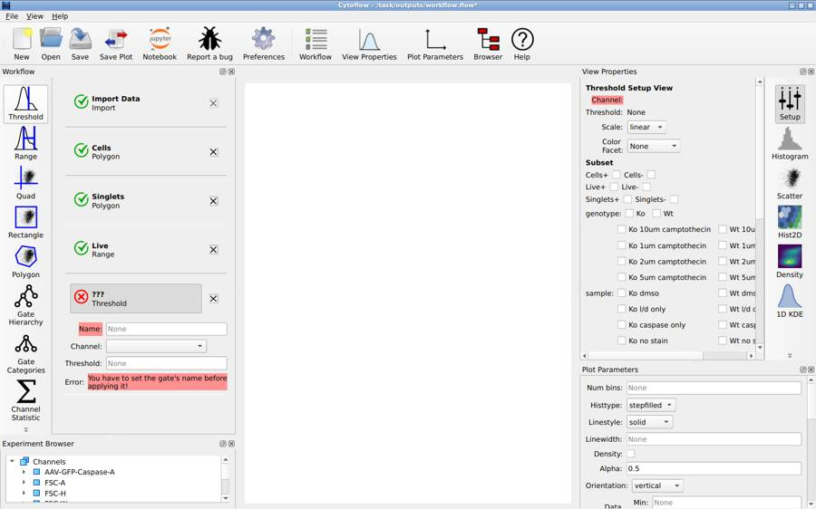
cd /task; cu click 288 581; cu type "Casp_pos"; cu key Return; sleep 0.5; cu click 1087 309; sleep 0.5; cu click 1107 352; sleep 0.5; cu click 1140 224; sleep 1; cu click 1135 272; sleep 1; cu click 1150 258; sleep 1; cu click 1148 210; sleep 1; cu click 1113 802; sleep 0.5; cu click 275 612; sleep 1; cu click 250 613; sleep 12; cu screenshot /tmp/screen.png
{
"file_path": "/tmp/screen.png"
}/tmp/screen.png
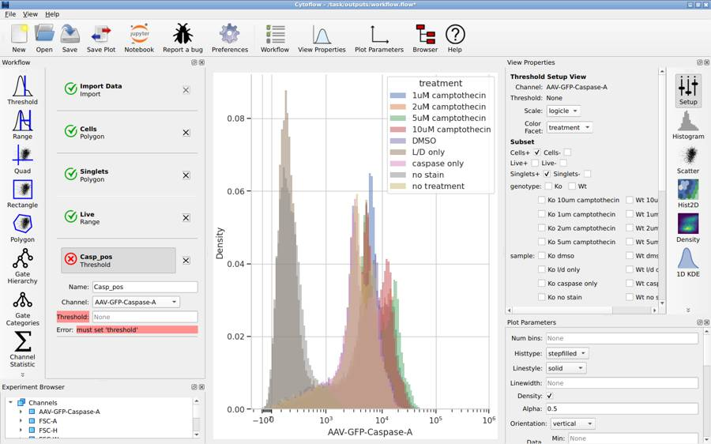
cd /task; cu click 288 642; cu type "1500"; cu key Return; sleep 12; cu screenshot /tmp/screen.png
{
"file_path": "/tmp/screen.png"
}/tmp/screen.png
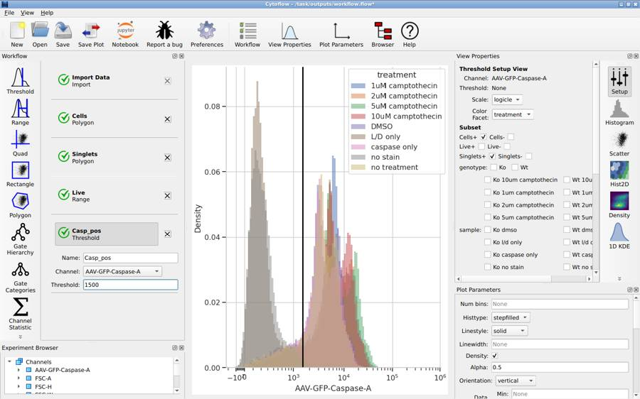
cd /task; cu key ctrl+s; sleep 2; cu click 45 700; sleep 3; cu screenshot /tmp/screen.png
{
"file_path": "/tmp/screen.png"
}/tmp/screen.png
cd /task; cu click 408 784; sleep 2; cu scroll 250 600 down 10; sleep 1; cu screenshot /tmp/screen.png
{
"file_path": "/tmp/screen.png"
}/tmp/screen.png
cd /task; cu click 288 543; cu type "EventCount"; cu key Return; sleep 0.5; cu click 265 573; sleep 1; cu click 230 598; sleep 1; cu click 255 603; sleep 1; cu screenshot /tmp/screen.png
{
"file_path": "/tmp/screen.png"
}/tmp/screen.png
cd /task; cu click 205 437; sleep 1; cu click 185 632; sleep 0.5; cu click 185 660; sleep 0.5; cu click 185 689; sleep 0.5; cu click 185 717; sleep 0.5; cu click 361 717; sleep 5; cu screenshot /tmp/screen.png
{
"file_path": "/tmp/screen.png"
}/tmp/screen.png
cd /task; cu scroll 1393 500 down 10; sleep 1; cu screenshot /tmp/screen.png
{
"file_path": "/tmp/screen.png"
}/tmp/screen.png
cd /task; cu drag 1232 639 1232 880; sleep 2; cu screenshot /tmp/screen.png
{
"file_path": "/tmp/screen.png"
}/tmp/screen.png
cd /task; cu click 1393 791; sleep 1; cu screenshot /tmp/screen.png
{
"file_path": "/tmp/screen.png"
}/tmp/screen.png
cd /task; cu click 1400 600; sleep 3; cu screenshot /tmp/screen.png
{
"file_path": "/tmp/screen.png"
}/tmp/screen.png
cd /task; cu click 1145 181; sleep 1; cu screenshot /tmp/screen.png
{
"file_path": "/tmp/screen.png"
}/tmp/screen.png
cd /task; cu click 1140 206; sleep 4; cu screenshot /tmp/screen.png
{
"file_path": "/tmp/screen.png"
}/tmp/screen.png
mkdir -p /tmp/cfx && chmod 777 /tmp/cfx; cd /task; cu click 1146 211; sleep 2; cu screenshot /tmp/screen.png
{
"file_path": "/tmp/screen.png"
}/tmp/screen.png
cd /task; cu click 706 567; cu paste "/tmp/cfx/counts_sub30k.csv"; sleep 0.5; cu key Return; sleep 3; ls -la /tmp/cfx; head -20 /tmp/cfx/counts_sub30k.csv; wc -l /tmp/cfx/counts_sub30k.csv
total 16 drwxrwxrwx 2 root root 4096 Nov 10 19:41 . drwxrwxrwx 12 root root 4096 Nov 10 19:41 .. -rw-rw-r-- 1 cfapp cfapp 4578 Nov 10 19:41 counts_sub30k.csv Casp_pos,Cells,Live,Singlets,well,FSC-A 0,0,0,0,A10,1691.0 0,0,0,0,A11,2275.0 0,0,0,0,A12,1502.0 0,0,0,0,A6,2488.0 0,0,0,0,A7,2147.0 0,0,0,0,A8,1713.0 0,0,0,0,A9,2006.0 0,0,0,0,B10,2988.0 0,0,0,0,B11,1900.0 0,0,0,0,B12,1114.0 0,0,0,0,B2,2.0 0,0,0,0,B6,3506.0 0,0,0,0,B7,2970.0 0,0,0,0,B8,3054.0 0,0,0,0,B9,3500.0 0,0,0,1,A10,2172.0 0,0,0,1,A11,3262.0 0,0,0,1,A12,2188.0 0,0,0,1,A6,4736.0 257 /tmp/cfx/counts_sub30k.csv
cat > /tmp/work/tab.py <<'E'
import pandas as pd, sys
f=sys.argv[1]
d=pd.read_csv(f)
valcol=[c for c in d.columns if c not in ('Casp_pos','Cells','Live','Singlets','well','Casp_pos_Singlets','Zombie_pos')][0]
d=d.rename(columns={valcol:'n'})
lay=pd.read_csv('/task/inputs/plate_layout.csv')
rows=[]
for w,g in d.groupby('well'):
tot=g.n.sum()
c=g[g.Cells==1]; s=c[c.Singlets==1]; l=s[s.Live==1]; cp=l[l.Casp_pos==1]; cs=s[s.Casp_pos==1]
rows.append(dict(well=w,all=int(tot),cells=int(c.n.sum()),singlets=int(s.n.sum()),live=int(l.n.sum()),casp_live=int(cp.n.sum()),casp_singlets=int(cs.n.sum())))
r=pd.DataFrame(rows).merge(lay[['well','sample']],on='well')
r['%cells']=100*r.cells/r['all']; r['%sing']=100*r.singlets/r.cells; r['%live']=100*r.live/r.singlets
r['%casp_live']=100*r.casp_live/r.live; r['%casp_sing']=100*r.casp_singlets/r.singlets
r['k']=r.well.str[0]+r.well.str[1:].str.zfill(2)
r=r.sort_values('k').drop(columns='k')
pd.set_option('display.width',250)
print(r.round(2).to_string(index=False))
E
python3 /tmp/work/tab.py /tmp/cfx/counts_sub30k.csvwell all cells singlets live casp_live casp_singlets sample %cells %sing %live %casp_live %casp_sing A2 30000 18120 11816 11816 12 12 WT no stain 60.40 65.21 100.00 0.10 0.10 A4 30000 18224 12321 12321 10861 10861 WT caspase only 60.75 67.61 100.00 88.15 88.15 A6 30000 18194 12649 1034 1 13 WT L/D only 60.65 69.52 8.17 0.10 0.10 A7 30000 19115 13680 766 466 12737 WT 10uM camptothecin 63.72 71.57 5.60 60.84 93.11 A8 30000 18903 13813 1077 761 12934 WT 5uM camptothecin 63.01 73.07 7.80 70.66 93.64 A9 30000 18351 12706 1256 937 11811 WT 2uM camptothecin 61.17 69.24 9.89 74.60 92.96 A10 30000 17984 11845 1070 743 10861 WT 1uM camptothecin 59.95 65.86 9.03 69.44 91.69 A11 30000 18999 13113 1018 433 11615 WT DMSO 63.33 69.02 7.76 42.53 88.58 A12 30000 20479 13168 1206 664 11803 WT no treatment 68.26 64.30 9.16 55.06 89.63 B2 30000 18856 14593 14587 197 199 KO no stain 62.85 77.39 99.96 1.35 1.36 B4 30000 19039 13613 13613 10926 10926 KO caspase only 63.46 71.50 100.00 80.26 80.26 B6 30000 16653 12309 679 0 70 KO L/D only 55.51 73.91 5.52 0.00 0.57 B7 30000 17497 12350 389 208 10437 KO 10uM camptothecin 58.32 70.58 3.15 53.47 84.51 B8 30000 18230 13552 305 178 11479 KO 5uM camptothecin 60.77 74.34 2.25 58.36 84.70 B9 30000 16497 12608 572 248 10467 KO 2uM camptothecin 54.99 76.43 4.54 43.36 83.02 B10 30000 17320 12737 494 204 10787 KO 1uM camptothecin 57.73 73.54 3.88 41.30 84.69 B11 30000 17038 12204 510 138 9492 KO DMSO 56.79 71.63 4.18 27.06 77.78 B12 30000 17472 12517 728 189 9756 KO no treatment 58.24 71.64 5.82 25.96 77.94
cd /task; cu click 1393 182; sleep 3; cu screenshot /tmp/screen.png
{
"file_path": "/tmp/screen.png"
}/tmp/screen.png
cd /task; cu drag 1232 803 1232 600; sleep 2; cu click 1150 244; sleep 1; cu click 1140 220; sleep 2; cu screenshot /tmp/screen.png
{
"file_path": "/tmp/screen.png"
}/tmp/screen.png
cd /task; cu click 1260 646; cu type "48"; cu key Return; sleep 0.5; cu scroll 1230 780 down 10; sleep 1; cu screenshot /tmp/screen.png
{
"file_path": "/tmp/screen.png"
}/tmp/screen.png
cd /task; cu scroll 1230 780 up 2; sleep 1; cu screenshot /tmp/screen.png; python3 -c "
from PIL import Image
Image.open('/tmp/screen.png').crop((1024,600,1440,900)).save('/tmp/pp.png')"{
"file_path": "/tmp/pp.png"
}/tmp/screen.png
cd /task; cu click 1269 722; cu type "6"; cu key Return; sleep 0.5; cu click 1190 181; sleep 1; cu click 1140 373; sleep 15; cu screenshot /tmp/screen.png
{
"file_path": "/tmp/screen.png"
}/tmp/screen.png
ps aux --sort=-rss | grep "[c]ytoflow" | awk '{print $2, $6/1024 " MB"}' | head -3; free -m | head -21563 540.047 MB
1576 512.242 MB
1645 71.2852 MB
total used free shared buff/cache available
Mem: 7949 1417 5457 16 1316 6532thinking
Well A12 (WT, no treatment) has an acquisition clog: almost no events in the first half of the run, then a burst. I'm checking the caspase distribution within the live gate before finalising the gates.
cd /task; cu click 240 400; sleep 5; cu screenshot /tmp/screen.png
{
"file_path": "/tmp/screen.png"
}/tmp/screen.png
cd /task; cu click 1083 330; sleep 1; cu click 1158 377; sleep 10; cu screenshot /tmp/screen.png
{
"file_path": "/tmp/screen.png"
}/tmp/screen.png
cd /task; cu click 1083 330; sleep 1; cu click 1158 377; sleep 6; cu click 45 180; sleep 3; cu screenshot /tmp/screen.png
{
"file_path": "/tmp/screen.png"
}/tmp/screen.png
cd /task; cu click 288 668; cu type "Casp_pos_Singlets"; cu key Return; sleep 0.5; cu click 1087 330; sleep 0.5; cu click 1107 374; sleep 0.5; cu click 1140 224; sleep 1; cu click 1135 272; sleep 1; cu click 275 698; sleep 1; cu click 250 699; sleep 3; cu click 288 728; cu type "1500"; cu key Return; sleep 8; cu screenshot /tmp/screen.png
{
"file_path": "/tmp/screen.png"
}/tmp/screen.png
cd /task; cu click 45 250; sleep 3; cu click 288 668; cu type "Acq_first_24s"; cu key Return; sleep 0.5; cu click 265 698; sleep 1; cu screenshot /tmp/screen.png
{
"file_path": "/tmp/screen.png"
}/tmp/screen.png
cd /task; cu click 240 700; sleep 3; cu screenshot /tmp/screen.png
{
"file_path": "/tmp/screen.png"
}/tmp/screen.png
cd /task; cu click 280 754; cu type "Acq_first_24s"; cu key Return; sleep 0.5; cu click 265 785; sleep 1; cu screenshot /tmp/screen.png
{
"file_path": "/tmp/screen.png"
}/tmp/screen.png
cd /task; cu click 200 887; sleep 6; cu click 280 815; cu type "0"; cu key Return; sleep 1; cu click 280 845; cu type "24000"; cu key Return; sleep 8; cu screenshot /tmp/screen.png
{
"file_path": "/tmp/screen.png"
}/tmp/screen.png
cd /task; cu scroll 250 600 down 15; sleep 1; cu screenshot /tmp/screen.png
{
"file_path": "/tmp/screen.png"
}/tmp/screen.png
cd /task; cu click 240 844; sleep 3; cu scroll 250 600 down 15; sleep 1; cu screenshot /tmp/screen.png
{
"file_path": "/tmp/screen.png"
}/tmp/screen.png
cd /task; cu scroll 250 400 up 3; sleep 1; cu screenshot /tmp/screen.png; python3 -c "
from PIL import Image
Image.open('/tmp/screen.png').crop((0,120,420,900)).save('/tmp/wf.png')"{
"file_path": "/tmp/wf.png"
}/tmp/screen.png
cd /task; cu scroll 250 400 up 1; sleep 1; cu screenshot /tmp/screen.png; python3 -c "
from PIL import Image
Image.open('/tmp/screen.png').crop((0,120,420,900)).save('/tmp/wf.png')"{
"file_path": "/tmp/wf.png"
}/tmp/screen.png
cd /task; cu click 185 180; sleep 2; cu click 185 236; sleep 4; cu click 1393 589; sleep 1; cu screenshot /tmp/screen.png
{
"file_path": "/tmp/screen.png"
}/tmp/screen.png
cd /task; cp /tmp/screen.png /tmp/work/time_hist_sub.png; cu click 1406 400; sleep 4; cu screenshot /tmp/screen.png
{
"file_path": "/tmp/screen.png"
}/tmp/screen.png
cat > /tmp/work/export.sh <<'E'
#!/bin/bash
# usage: export.sh /tmp/cfx/name.csv (Long Table view of the statistic must be showing)
cu click 1146 211; sleep 2
cu click 706 567; cu paste "$1"; sleep 0.5; cu key Return; sleep 3
ls -la "$1"
E
chmod +x /tmp/work/export.sh; cd /task; cu key ctrl+s; sleep 2; /tmp/work/export.sh /tmp/cfx/counts_sub30k_v2.csv; head -3 /tmp/cfx/counts_sub30k_v2.csv
cat > /tmp/work/tab.py <<'E'
import pandas as pd, sys
f=sys.argv[1]
d=pd.read_csv(f)
keys=['Acq_first_24s','Casp_pos','Casp_pos_Singlets','Cells','Live','Singlets','well']
valcol=[c for c in d.columns if c not in keys][0]
d=d.rename(columns={valcol:'n'})
lay=pd.read_csv('/task/inputs/plate_layout.csv')
rows=[]
for w,g in d.groupby('well'):
tot=g.n.sum()
c=g[g.Cells==1]; s=c[c.Singlets==1]; l=s[s.Live==1]; cp=l[l.Casp_pos==1]; cs=s[s.Casp_pos_Singlets==1]; t=g[g.Acq_first_24s==1]
rows.append(dict(well=w,all=int(tot),cells=int(c.n.sum()),singlets=int(s.n.sum()),live=int(l.n.sum()),casp_live=int(cp.n.sum()),casp_singlets=int(cs.n.sum()),first24=int(t.n.sum())))
r=pd.DataFrame(rows).merge(lay[['well','sample']],on='well')
r['%cells']=100*r.cells/r['all']; r['%sing']=100*r.singlets/r.cells; r['%live']=100*r.live/r.singlets
r['%casp_live']=100*r.casp_live/r.live; r['%casp_sing']=100*r.casp_singlets/r.singlets; r['%first24']=100*r.first24/r['all']
r['k']=r.well.str[0]+r.well.str[1:].str.zfill(2)
r=r.sort_values('k').drop(columns='k')
pd.set_option('display.width',250)
print(r.round(2).to_string(index=False))
E
python3 /tmp/work/tab.py /tmp/cfx/counts_sub30k_v2.csv-rw-rw-r-- 1 cfapp cfapp 10918 Nov 10 19:47 /tmp/cfx/counts_sub30k_v2.csv Casp_pos,Cells,Live,Singlets,well,Acq_first_24s,Casp_pos_Singlets,FSC-A 0,0,0,0,A10,0,0,758.0 0,0,0,0,A10,1,0,933.0 well all cells singlets live casp_live casp_singlets first24 sample %cells %sing %live %casp_live %casp_sing %first24 A2 30000 18120 11816 11816 12 12 15955 WT no stain 60.40 65.21 100.00 0.10 0.10 53.18 A4 30000 18224 12321 12321 10861 10861 15398 WT caspase only 60.75 67.61 100.00 88.15 88.15 51.33 A6 30000 18194 12649 1034 1 13 15912 WT L/D only 60.65 69.52 8.17 0.10 0.10 53.04 A7 30000 19115 13680 766 466 12737 15795 WT 10uM camptothecin 63.72 71.57 5.60 60.84 93.11 52.65 A8 30000 18903 13813 1077 761 12934 16425 WT 5uM camptothecin 63.01 73.07 7.80 70.66 93.64 54.75 A9 30000 18351 12706 1256 937 11811 15898 WT 2uM camptothecin 61.17 69.24 9.89 74.60 92.96 52.99 A10 30000 17984 11845 1070 743 10861 16552 WT 1uM camptothecin 59.95 65.86 9.03 69.44 91.69 55.17 A11 30000 18999 13113 1018 433 11615 15683 WT DMSO 63.33 69.02 7.76 42.53 88.58 52.28 A12 30000 20479 13168 1206 664 11803 3329 WT no treatment 68.26 64.30 9.16 55.06 89.63 11.10 B2 30000 18856 14593 14587 197 199 15435 KO no stain 62.85 77.39 99.96 1.35 1.36 51.45 B4 30000 19039 13613 13613 10926 10926 15789 KO caspase only 63.46 71.50 100.00 80.26 80.26 52.63 B6 30000 16653 12309 679 0 70 15571 KO L/D only 55.51 73.91 5.52 0.00 0.57 51.90 B7 30000 17497 12350 389 208 10437 16014 KO 10uM camptothecin 58.32 70.58 3.15 53.47 84.51 53.38 B8 30000 18230 13552 305 178 11479 16495 KO 5uM camptothecin 60.77 74.34 2.25 58.36 84.70 54.98 B9 30000 16497 12608 572 248 10467 16133 KO 2uM camptothecin 54.99 76.43 4.54 43.36 83.02 53.78 B10 30000 17320 12737 494 204 10787 15985 KO 1uM camptothecin 57.73 73.54 3.88 41.30 84.69 53.28 B11 30000 17038 12204 510 138 9492 16136 KO DMSO 56.79 71.63 4.18 27.06 77.78 53.79 B12 30000 17472 12517 728 189 9756 15967 KO no treatment 58.24 71.64 5.82 25.96 77.94 53.22
cd /task; cu click 1393 589; sleep 1; cu click 1259 182; sleep 3; cu click 1160 181; sleep 1; cu screenshot /tmp/screen.png
{
"file_path": "/tmp/screen.png"
}/tmp/screen.png
cd /task; cu click 1140 132; sleep 12; cu screenshot /tmp/screen.png
{
"file_path": "/tmp/screen.png"
}/tmp/screen.png
cd /task; cu click 1393 589; sleep 1; cu click 1406 400; sleep 3; cu scroll 250 400 up 40; sleep 1; cu click 240 181; sleep 6; cu screenshot /tmp/screen.png
{
"file_path": "/tmp/screen.png"
}/tmp/screen.png
cd /task; cu scroll 250 300 up 20; sleep 1; cu screenshot /tmp/screen.png
{
"file_path": "/tmp/screen.png"
}/tmp/screen.png
cd /task; cu click 240 181; sleep 8; cu screenshot /tmp/screen.png
{
"file_path": "/tmp/screen.png"
}/tmp/screen.png
cd /task; cu click 1393 589; sleep 1; cu click 1406 330; sleep 3; cu screenshot /tmp/screen.png
{
"file_path": "/tmp/screen.png"
}/tmp/screen.png
cd /task; cu click 640 500; sleep 0.5; cu click 286 239; cu key ctrl+a; cu key BackSpace; cu key Return; sleep 1; cu screenshot /tmp/screen.png; python3 -c "
from PIL import Image
Image.open('/tmp/screen.png').crop((0,120,420,420)).save('/tmp/wf.png')"{
"file_path": "/tmp/wf.png"
}/tmp/screen.png
cd /task; cu click 286 383; for i in $(seq 1 12); do sleep 10; ps aux --sort=-rss | grep "[c]ytoflow-1.3.2/cytoflow$\|[c]ytoflow-1.3.2/cytoflow " | awk '{printf "%s:%dMB ", $2, $6/1024}'; free -m | awk 'NR==2{print " avail",$7}'; done; cu screenshot /tmp/screen.png{
"file_path": "/tmp/screen.png"
}1576:1688MB 1563:548MB 1574:38MB avail 5243 1576:1463MB 1563:548MB 1574:38MB avail 5507 1576:1419MB 1563:548MB 1574:38MB avail 5514 1576:1442MB 1563:548MB 1574:38MB avail 5462 1576:1442MB 1563:548MB 1574:38MB avail 5573 1576:1442MB 1563:548MB 1574:38MB avail 5607 1576:1442MB 1563:548MB 1574:38MB avail 5606 1576:1442MB 1563:548MB 1574:38MB avail 5605 1576:1442MB 1563:548MB 1574:38MB avail 5605 1576:1442MB 1563:548MB 1574:38MB avail 5605 1576:1442MB 1563:548MB 1574:38MB avail 5606 Command did not complete within its 120s timeout and was moved to the background (ID: b2w9vo7j3). Output is being written to: /tmp/claude-0/-task/42653ea3-ebb0-4086-9ea8-f86f953428f9/tasks/b2w9vo7j3.output. You will be notified when it completes. If it is still running after 10m in the background, it will be stopped and you will be notified. It is running now: do not start a second copy while it runs. If it is no longer needed, stop it with TaskStop. To check interim output, use Read on that file path. Session cwd remains /task; directory changes made by the backgrounded command do not apply to subsequent commands.
cd /task; sleep 5; cu screenshot /tmp/screen.png; ps aux --sort=-rss | grep "[c]ytoflow" | awk '{printf "%s:%dMB ", $2, $6/1024}'{
"file_path": "/tmp/screen.png"
}/tmp/screen.png 1576:1442MB 1563:548MB 1645:71MB 1628:46MB 1607:46MB 1574:38MB 1630:10MB 835:1MB 834:0MB 860:0MB
cd /task; python3 -c "print(sum([365736,440820,412724,395514,384992,428254,552590,377220,409074,392795,605670,457465,612174,493435,425772,539106,561171,538223]))"; cu key ctrl+s; sleep 3; ls -la outputs; cu scroll 250 600 down 15; sleep 1; cu screenshot /tmp/screen.png
{
"file_path": "/tmp/screen.png"
}8392735 total 184 drwxrwsrwx 2 agent task 4096 Nov 10 19:15 . drwxr-xr-x 4 root root 4096 Nov 5 22:25 .. -rw-rw-r-- 1 cfapp task 178422 Nov 10 19:52 workflow.flow /tmp/screen.png
cd /task; cu click 240 844; sleep 5; cu screenshot /tmp/screen.png
{
"file_path": "/tmp/screen.png"
}/tmp/screen.png
cd /task; /tmp/work/export.sh /tmp/cfx/counts_full.csv; python3 /tmp/work/tab.py /tmp/cfx/counts_full.csv
-rw-rw-r-- 1 cfapp cfapp 12188 Nov 10 19:52 /tmp/cfx/counts_full.csv well all cells singlets live casp_live casp_singlets first24 sample %cells %sing %live %casp_live %casp_sing %first24 A2 365736 221800 143691 143689 192 192 194065 WT no stain 60.64 64.78 100.00 0.13 0.13 53.06 A4 440820 267439 180735 180734 159247 159248 226744 WT caspase only 60.67 67.58 100.00 88.11 88.11 51.44 A6 412724 250421 173868 13516 37 191 220537 WT L/D only 60.68 69.43 7.77 0.27 0.11 53.43 A7 395514 253099 180994 10274 6460 168275 207342 WT 10uM camptothecin 63.99 71.51 5.68 62.88 92.97 52.42 A8 384992 243689 177948 14331 10337 166965 210710 WT 5uM camptothecin 63.30 73.02 8.05 72.13 93.83 54.73 A9 428254 262025 182561 17955 13068 169102 227489 WT 2uM camptothecin 61.18 69.67 9.84 72.78 92.63 53.12 A10 552590 329324 216343 19317 13227 198727 301700 WT 1uM camptothecin 59.60 65.69 8.93 68.47 91.86 54.60 A11 377220 238941 165277 12586 5371 146448 196769 WT DMSO 63.34 69.17 7.62 42.67 88.61 52.16 A12 409074 279606 179554 15781 8851 160926 45840 WT no treatment 68.35 64.22 8.79 56.09 89.63 11.21 B2 392795 247009 190784 190726 2319 2338 203066 KO no stain 62.88 77.24 99.97 1.22 1.23 51.70 B4 605670 382450 276125 276117 222911 222917 319587 KO caspase only 63.14 72.20 100.00 80.73 80.73 52.77 B6 457465 252864 186562 9424 5 802 238396 KO L/D only 55.28 73.78 5.05 0.05 0.43 52.11 B7 612174 358506 253519 7725 4104 215547 325449 KO 10uM camptothecin 58.56 70.72 3.05 53.13 85.02 53.16 B8 493435 299181 222071 4740 2420 188793 269610 KO 5uM camptothecin 60.63 74.23 2.13 51.05 85.01 54.64 B9 425772 233882 180002 7952 3486 149709 228756 KO 2uM camptothecin 54.93 76.96 4.42 43.84 83.17 53.73 B10 539106 311837 228979 8578 3603 194894 285112 KO 1uM camptothecin 57.84 73.43 3.75 42.00 85.11 52.89 B11 561171 317998 228658 9510 2644 177523 302793 KO DMSO 56.67 71.91 4.16 27.80 77.64 53.96 B12 538223 312495 222113 13306 3792 173242 286714 KO no treatment 58.06 71.08 5.99 28.50 78.00 53.27
cd /task; python3 - <<'E'
import re
t=open('outputs/workflow.flow').read()
# print op blocks roughly
for m in re.finditer(r'operation: [^\n]*\n', t):
s=m.start(); print(t[s:s+900].split('workflow-item')[0][:900]); print('=====')
E
grep -n "events:\|xscale\|yscale\|statistic\|by:" outputs/workflow.flow | head -60operation: !import;4
channels_list: []
conditions:
genotype: category
sample: category
treatment: category
well: category
events: null
ignore_v_bool: false
name_metadata: null
tubes:
- !tube;1
conditions:
genotype: WT
sample: WT no stain
treatment: no stain
well: A2
file: /task/inputs/raw/Caspase_WT_KO_optimization_caspase_Group_A2.fcs
- !tube;1
conditions:
genotype: WT
sample: WT caspase only
treatment: caspase only
well: A4
file: /task/inputs/raw/Caspase_WT_KO_optimization_caspase_Group_A4.fcs
- !tube;1
conditions:
genotype: WT
sample: WT L/D only
treatment: L/D only
well: A6
file: /task/inputs/raw/Caspase_WT_KO_optimization_caspase_Group_A6.fcs
- !tube;1
conditions:
genotype: WT
=====
operation: *id003
statistics:
Conditions: !pandas-dataframe;1
columns: []
data: {}
index: !pandas-multiindex;2
codes:
- - 1
- 1
- 1
- 1
- 1
- 1
- 1
- 1
- 1
- 0
- 0
- 0
- 0
- 0
- 0
- 0
- 0
- 0
- - 16
- 15
- 14
- 9
- 12
- 11
- 10
- 13
- 17
- 7
- 6
- 5
- 0
- 3
- 2
- 1
- 4
- 8
- - 7
- 6
- 5
- 0
- 3
- 2
- 1
- 4
- 8
- 7
- 6
- 5
- 0
- 3
- 2
- 1
- 4
=====
operation: &id005 !polygon;1
name: Singlets
vertices:
- !!python/tuple
- 29836.125437421695
- 34725.82166527745
- !!python/tuple
- 29836.125437421695
- 58130.20698901929
- !!python/tuple
- 84306.81117982126
- 105554.88251344353
- !!python/tuple
- 135146.11787272757
- 143125.0800068186
- !!python/tuple
- 187801.1140903805
- 179463.4677463125
- !!python/tuple
- 245903.17888227344
- 219497.28474744986
- !!python/tuple
- 296742.4855751797
- 215185.95060886585
- !!python/tuple
- 240456.11030803347
- 161602.22631503583
- !!python/tuple
- 187801.1140903805
- 125263.83857554191
- !!python/tuple
- 138777.49692222086
- 89541.35571298859
- !!python/tuple
- 93385.25880355458
- 55050.68260431641
- !!python/tuple
=====
operation: *id008
statistics:
Conditions: !pandas-dataframe;1
columns: []
data: {}
index: !pandas-multiindex;2
codes:
- - 1
- 1
- 1
- 1
- 1
- 1
- 1
- 1
- 1
- 0
- 0
- 0
- 0
- 0
- 0
- 0
- 0
- 0
- - 16
- 15
- 14
- 9
- 12
- 11
- 10
- 13
- 17
- 7
- 6
- 5
- 0
- 3
- 2
- 1
- 4
- 8
- - 7
- 6
- 5
- 0
- 3
- 2
- 1
- 4
- 8
- 7
- 6
- 5
- 0
- 3
- 2
- 1
- 4
=====
operation: *id010
statistics:
Conditions: !pandas-dataframe;1
columns: []
data: {}
index: !pandas-multiindex;2
codes:
- - 1
- 1
- 1
- 1
- 1
- 1
- 1
- 1
- 1
- 0
- 0
- 0
- 0
- 0
- 0
- 0
- 0
- 0
- - 16
- 15
- 14
- 9
- 12
- 11
- 10
- 13
- 17
- 7
- 6
- 5
- 0
- 3
- 2
- 1
- 4
- 8
- - 7
- 6
- 5
- 0
- 3
- 2
- 1
- 4
- 8
- 7
- 6
- 5
- 0
- 3
- 2
- 1
- 4
=====
operation: *id012
statistics:
Conditions: !pandas-dataframe;1
columns: []
data: {}
index: !pandas-multiindex;2
codes:
- - 1
- 1
- 1
- 1
- 1
- 1
- 1
- 1
- 1
- 0
- 0
- 0
- 0
- 0
- 0
- 0
- 0
- 0
- - 16
- 15
- 14
- 9
- 12
- 11
- 10
- 13
- 17
- 7
- 6
- 5
- 0
- 3
- 2
- 1
- 4
- 8
- - 7
- 6
- 5
- 0
- 3
- 2
- 1
- 4
- 8
- 7
- 6
- 5
- 0
- 3
- 2
- 1
- 4
=====
operation: *id014
statistics:
Conditions: !pandas-dataframe;1
columns: []
data: {}
index: !pandas-multiindex;2
codes:
- - 1
- 1
- 1
- 1
- 1
- 1
- 1
- 1
- 1
- 0
- 0
- 0
- 0
- 0
- 0
- 0
- 0
- 0
- - 16
- 15
- 14
- 9
- 12
- 11
- 10
- 13
- 17
- 7
… [1,714 more characters not shown]cd /task; cu click 240 580; sleep 6; cu screenshot /tmp/screen.png
{
"file_path": "/tmp/screen.png"
}/tmp/screen.png
cd /task; cu click 45 250; sleep 4; cu screenshot /tmp/screen.png
{
"file_path": "/tmp/screen.png"
}/tmp/screen.png
cd /task; cu click 280 777; cu type "FSC_offscale"; cu key Return; sleep 0.5; cu click 265 807; sleep 1; cu screenshot /tmp/screen.png; python3 -c "
from PIL import Image
Image.open('/tmp/screen.png').crop((0,600,420,900)).save('/tmp/wf.png')"{
"file_path": "/tmp/wf.png"
}/tmp/screen.png
cd /task; cu click 205 720; sleep 8; cu click 280 837; cu type "1000000"; cu key Return; sleep 1; cu click 280 868; cu type "2000000"; cu key Return; sleep 10; cu screenshot /tmp/screen.png; ps aux --sort=-rss | grep "[c]ytoflow" | awk '{printf "%s:%dMB ", $2, $6/1024}' | cut -c1-60{
"file_path": "/tmp/screen.png"
}/tmp/screen.png 1576:1445MB 1563:449MB 1574:30MB 1628:29MB 1607:29MB 1645:20
cd /task; sleep 5; cu click 45 250; sleep 4; cu screenshot /tmp/screen.png; python3 -c "
from PIL import Image
Image.open('/tmp/screen.png').crop((0,120,420,900)).save('/tmp/wf.png')"{
"file_path": "/tmp/wf.png"
}/tmp/screen.png
cd /task; cu click 280 863; cu type "SSC_offscale"; cu key Return; sleep 0.5; cu scroll 250 600 down 3; sleep 1; cu screenshot /tmp/screen.png; python3 -c "
from PIL import Image
Image.open('/tmp/screen.png').crop((0,120,420,900)).save('/tmp/wf.png')"{
"file_path": "/tmp/wf.png"
}/tmp/screen.png
cd /task; cu click 265 706; sleep 1; cu screenshot /tmp/screen.png; python3 -c "
from PIL import Image
Image.open('/tmp/screen.png').crop((0,500,420,900)).save('/tmp/wf.png')"{
"file_path": "/tmp/wf.png"
}/tmp/screen.png
cd /task; cu click 205 815; sleep 8; cu click 280 736; cu type "1000000"; cu key Return; sleep 1; cu click 280 767; cu type "2000000"; cu key Return; sleep 12; cu screenshot /tmp/screen.png
{
"file_path": "/tmp/screen.png"
}/tmp/screen.png
cd /task; sleep 8; cu click 240 844; sleep 5; cu click 45 700; sleep 4; cu scroll 250 600 down 25; sleep 1; cu screenshot /tmp/screen.png; python3 -c "
from PIL import Image
Image.open('/tmp/screen.png').crop((0,120,420,900)).save('/tmp/wf.png')"{
"file_path": "/tmp/wf.png"
}/tmp/screen.png
cd /task; cu click 288 552; cu type "QCCount"; cu key Return; sleep 0.5; cu click 265 582; sleep 1; cu screenshot /tmp/screen.png; python3 -c "
from PIL import Image
Image.open('/tmp/screen.png').crop((0,400,420,900)).save('/tmp/wf.png')"{
"file_path": "/tmp/wf.png"
}/tmp/screen.png
cd /task; cu click 205 607; sleep 1; cu click 255 612; sleep 1; cu screenshot /tmp/screen.png; python3 -c "
from PIL import Image
Image.open('/tmp/screen.png').crop((0,300,420,900)).save('/tmp/wf.png')"{
"file_path": "/tmp/wf.png"
}/tmp/screen.png
cd /task; cu click 205 302; sleep 1; cu click 185 753; sleep 1; cu click 361 641; sleep 1; cu click 361 781; sleep 6; cu screenshot /tmp/screen.png; python3 -c "
from PIL import Image
Image.open('/tmp/screen.png').crop((0,300,420,900)).save('/tmp/wf.png')"{
"file_path": "/tmp/wf.png"
}/tmp/screen.png
cd /task; sleep 3; cu click 45 700; sleep 4; cu scroll 408 500 down 40; sleep 1; cu screenshot /tmp/screen.png; python3 -c "
from PIL import Image
Image.open('/tmp/screen.png').crop((0,120,420,900)).save('/tmp/wf.png')"{
"file_path": "/tmp/wf.png"
}/tmp/screen.png
cd /task; cu scroll 408 500 up 9; sleep 1; cu screenshot /tmp/screen.png; python3 -c "
from PIL import Image
Image.open('/tmp/screen.png').crop((0,120,420,900)).save('/tmp/wf.png')"{
"file_path": "/tmp/wf.png"
}/tmp/screen.png
cd /task; cu click 288 293; cu type "CaspMedian"; cu key Return; sleep 0.5; cu click 265 323; sleep 1; cu screenshot /tmp/s1.png >/dev/null; python3 -c "
from PIL import Image
Image.open('/tmp/s1.png').crop((0,200,420,700)).save('/tmp/wf.png')"{
"file_path": "/tmp/wf.png"
}(Bash completed with no output)
cd /task; cu click 245 324; sleep 1; cu click 255 353; sleep 1; cu screenshot /tmp/s1.png >/dev/null; python3 -c "
from PIL import Image
Image.open('/tmp/s1.png').crop((0,120,420,700)).save('/tmp/wf.png')"{
"file_path": "/tmp/wf.png"
}(Bash completed with no output)
cd /task; cu click 208 617; sleep 1; cu click 185 467; sleep 1; cu click 185 523; sleep 1; cu click 361 411; sleep 1; cu click 361 523; sleep 8; cu screenshot /tmp/s1.png >/dev/null; python3 -c "
from PIL import Image
Image.open('/tmp/s1.png').crop((0,120,420,700)).save('/tmp/wf.png')"{
"file_path": "/tmp/wf.png"
}(Bash completed with no output)
cd /task; sleep 3; cu key ctrl+s; sleep 3; cu click 1393 589; sleep 1; cu click 1406 400; sleep 3; cu click 1145 181; sleep 1; cu screenshot /tmp/screen.png
{
"file_path": "/tmp/screen.png"
}/tmp/screen.png
cd /task; cu click 1141 182; sleep 4; /tmp/work/export.sh /tmp/cfx/casp_median_full.csv; cu click 1145 181; sleep 1; cu click 1131 254; sleep 4; /tmp/work/export.sh /tmp/cfx/qc_count_full.csv; cu click 1145 181; sleep 1; cu click 1139 230; sleep 4; /tmp/work/export.sh /tmp/cfx/counts_full_v2.csv; head -5 /tmp/cfx/casp_median_full.csv /tmp/cfx/qc_count_full.csv /tmp/cfx/counts_full_v2.csv; wc -l /tmp/cfx/*.csv
-rw-rw-r-- 1 cfapp cfapp 2277 Nov 10 20:00 /tmp/cfx/casp_median_full.csv -rw-rw-r-- 1 cfapp cfapp 1065 Nov 10 20:00 /tmp/cfx/qc_count_full.csv -rw-rw-r-- 1 cfapp cfapp 1065 Nov 10 20:00 /tmp/cfx/counts_full_v2.csv ==> /tmp/cfx/casp_median_full.csv <== Cells,Live,Singlets,well,AAV-GFP-Caspase-A 0,0,0,A10,867.0 0,0,0,A11,370.0 0,0,0,A12,765.0 0,0,0,A2,14240.0 ==> /tmp/cfx/qc_count_full.csv <== FSC_offscale,SSC_offscale,well,FSC-A 0,0,A10,541293.0 0,0,A11,374464.0 0,0,A12,399167.0 0,0,A2,358690.0 ==> /tmp/cfx/counts_full_v2.csv <== FSC_offscale,SSC_offscale,well,FSC-A 0,0,A10,541293.0 0,0,A11,374464.0 0,0,A12,399167.0 0,0,A2,358690.0 143 /tmp/cfx/casp_median_full.csv 543 /tmp/cfx/counts_full.csv 73 /tmp/cfx/counts_full_v2.csv 257 /tmp/cfx/counts_sub30k.csv 507 /tmp/cfx/counts_sub30k_v2.csv 73 /tmp/cfx/qc_count_full.csv 1596 total
cd /task; python3 - <<'E'
import pandas as pd
pd.set_option('display.width',250)
m=pd.read_csv('/tmp/cfx/casp_median_full.csv')
print(m.columns.tolist(), len(m))
m=m.rename(columns={m.columns[-1]:'med'})
p=m.pivot_table(index='well',columns=['Cells','Singlets','Live'],values='med')
print(p.round(0))
q=pd.read_csv('/tmp/cfx/qc_count_full.csv'); q=q.rename(columns={q.columns[-1]:'n'})
print(q.pivot_table(index='well',columns=['FSC_offscale','SSC_offscale'],values='n',fill_value=0))
E['Cells', 'Live', 'Singlets', 'well', 'AAV-GFP-Caspase-A'] 142 Cells 0 1 Singlets 0 1 0 1 Live 0 1 0 1 0 1 0 1 well A10 867.0 279.0 1323.0 1437.0 20075.0 1984.0 11330.0 2443.0 A11 370.0 249.0 855.0 590.0 9956.0 538.0 6706.0 992.0 A12 765.0 240.0 949.0 1484.0 11050.0 676.0 5906.0 1970.0 A2 14240.0 56.0 14.0 54.0 NaN 249.0 974.0 131.0 A4 107958.0 334.0 NaN 874.0 11900.0 8519.0 6184.0 5944.0 A6 72.0 34.0 87.0 57.0 406.0 123.0 205.0 79.0 A7 489.0 306.0 1357.0 933.0 18038.0 1143.0 10905.0 2056.0 A8 644.0 380.0 1685.0 1223.0 22666.0 1890.0 14132.0 2448.0 A9 575.0 339.0 1377.0 957.0 18245.0 1892.0 11471.0 2499.0 B10 278.0 279.0 792.0 692.0 9764.0 652.0 5711.0 978.0 B11 237.0 169.0 504.0 382.0 4951.0 338.0 2758.0 363.0 B12 305.0 169.0 535.0 372.0 5421.0 395.0 3040.0 357.0 B2 13268.0 50.0 133.0 82.0 1177.0 515.0 1202.0 253.0 B4 52082.0 214.0 682.0 482.0 4282.0 5438.0 3162.0 2883.0 B6 39.0 30.0 58.0 44.0 325.0 125.0 157.0 70.0 B7 276.0 235.0 723.0 625.0 8802.0 752.0 4751.0 1800.0 B8 267.0 246.0 642.0 620.0 8481.0 870.0 4547.0 1583.0 B9 244.0 261.0 682.0 695.0 8002.0 524.0 4700.0 954.0 FSC_offscale 0 1 SSC_offscale 0 1 0 1 well A10 541293.0 3593.0 662.0 7042.0 A11 374464.0 1217.0 233.0 1306.0 A12 399167.0 3486.0 822.0 5599.0 A2 358690.0 1938.0 687.0 4421.0 A4 435680.0 1725.0 470.0 2945.0 A6 407178.0 1961.0 380.0 3205.0 A7 392729.0 1266.0 177.0 1342.0 A8 381489.0 1383.0 173.0 1947.0 A9 423831.0 1582.0 335.0 2506.0 B10 535816.0 2778.0 11.0 501.0 B11 557619.0 2941.0 14.0 597.0 B12 533587.0 3771.0 19.0 846.0 B2 390721.0 1887.0 4.0 183.0 B4 601742.0 3598.0 6.0 324.0 B6 455208.0 1773.0 34.0 450.0 B7 607860.0 3560.0 21.0 733.0 B8 489637.0 3290.0 1.0 507.0 B9 424055.0 1426.0 4.0 287.0
cd /task; cu click 1145 181; sleep 1; cu screenshot /tmp/screen.png; python3 -c "
from PIL import Image
Image.open('/tmp/screen.png').crop((1020,60,1440,320)).save('/tmp/wf.png')"{
"file_path": "/tmp/wf.png"
}/tmp/screen.png
cd /task; cu click 1140 158; sleep 4; /tmp/work/export.sh /tmp/cfx/counts_full_v2.csv; head -3 /tmp/cfx/counts_full_v2.csv; python3 /tmp/work/tab.py /tmp/cfx/counts_full_v2.csv > /tmp/work/t2.txt; python3 /tmp/work/tab.py /tmp/cfx/counts_full.csv > /tmp/work/t1.txt; diff /tmp/work/t1.txt /tmp/work/t2.txt && echo IDENTICAL; cu key ctrl+s; sleep 3; ls -la /task/outputs; grep -n "events:" /task/outputs/workflow.flow | head; grep -n "name: \(Cells\|Singlets\|Live\|Casp_pos\|Casp_pos_Singlets\|Acq_first_24s\|FSC_offscale\|SSC_offscale\)$" /task/outputs/workflow.flow | head -40
-rw-rw-r-- 1 cfapp cfapp 1065 Nov 10 20:00 /tmp/cfx/counts_full_v2.csv
FSC_offscale,SSC_offscale,well,FSC-A
0,0,A10,541293.0
0,0,A11,374464.0
Traceback (most recent call last):
File "/tmp/work/tab.py", line 11, in <module>
c=g[g.Cells==1]; s=c[c.Singlets==1]; l=s[s.Live==1]; cp=l[l.Casp_pos==1]; cs=s[s.Casp_pos_Singlets==1]; t=g[g.Acq_first_24s==1]
^^^^^^^
File "/usr/lib/python3/dist-packages/pandas/core/generic.py", line 6204, in __getattr__
return object.__getattribute__(self, name)
^^^^^^^^^^^^^^^^^^^^^^^^^^^^^^^^^^^
AttributeError: 'DataFrame' object has no attribute 'Cells'. Did you mean: 'well'?
1,19d0
< well all cells singlets live casp_live casp_singlets first24 sample %cells %sing %live %casp_live %casp_sing %first24
< A2 365736 221800 143691 143689 192 192 194065 WT no stain 60.64 64.78 100.00 0.13 0.13 53.06
< A4 440820 267439 180735 180734 159247 159248 226744 WT caspase only 60.67 67.58 100.00 88.11 88.11 51.44
< A6 412724 250421 173868 13516 37 191 220537 WT L/D only 60.68 69.43 7.77 0.27 0.11 53.43
< A7 395514 253099 180994 10274 6460 168275 207342 WT 10uM camptothecin 63.99 71.51 5.68 62.88 92.97 52.42
< A8 384992 243689 177948 14331 10337 166965 210710 WT 5uM camptothecin 63.30 73.02 8.05 72.13 93.83 54.73
< A9 428254 262025 182561 17955 13068 169102 227489 WT 2uM camptothecin 61.18 69.67 9.84 72.78 92.63 53.12
< A10 552590 329324 216343 19317 13227 198727 301700 WT 1uM camptothecin 59.60 65.69 8.93 68.47 91.86 54.60
< A11 377220 238941 165277 12586 5371 146448 196769 WT DMSO 63.34 69.17 7.62 42.67 88.61 52.16
< A12 409074 279606 179554 15781 8851 160926 45840 WT no treatment 68.35 64.22 8.79 56.09 89.63 11.21
< B2 392795 247009 190784 190726 2319 2338 203066 KO no stain 62.88 77.24 99.97 1.22 1.23 51.70
< B4 605670 382450 276125 276117 222911 222917 319587 KO caspase only 63.14 72.20 100.00 80.73 80.73 52.77
< B6 457465 252864 186562 9424 5 802 238396 KO L/D only 55.28 73.78 5.05 0.05 0.43 52.11
< B7 612174 358506 253519 7725 4104 215547 325449 KO 10uM camptothecin 58.56 70.72 3.05 53.13 85.02 53.16
< B8 493435 299181 222071 4740 2420 188793 269610 KO 5uM camptothecin 60.63 74.23 2.13 51.05 85.01 54.64
< B9 425772 233882 180002 7952 3486 149709 228756 KO 2uM camptothecin 54.93 76.96 4.42 43.84 83.17 53.73
< B10 539106 311837 228979 8578 3603 194894 285112 KO 1uM camptothecin 57.84 73.43 3.75 42.00 85.11 52.89
< B11 561171 317998 228658 9510 2644 177523 302793 KO DMSO 56.67 71.91 4.16 27.80 77.64 53.96
< B12 538223 312495 222113 13306 3792 173242 286714 KO no treatment 58.06 71.08 5.99 28.50 78.00 53.27
total 412
drwxrwsrwx 2 agent task 4096 Nov 10 19:15 .
drwxr-xr-x 4 root root 4096 Nov 5 22:25 ..
-rw-rw-r-- 1 cfapp task 410427 Nov 10 20:00 workflow.flow
271: events: null
799: name: Cells
1387: name: Cells
1394: name: Singlets
1599: name: Singlets
1823: name: Cells
1923: name: Cells
1928: name: Singlets
2174: name: Live
2203: name: Cells
2208: name: Singlets
2745: name: Casp_pos
2775: name: Cells
2782: name: Live
2789: name: Singlets
3345: name: Casp_pos_Singlets
3375: name: Casp_pos
3380: name: Cells
3385: name: Live
3390: name: Singlets
3964: name: Acq_first_24s
3993: name: Casp_pos
4000: name: Casp_pos_Singlets
4007: name: Cells
4014: name: Live
4021: name: Singlets
4614: name: FSC_offscale
4643: name: Acq_first_24s
4648: name: Casp_pos
4653: name: Casp_pos_Singlets
4658: name: Cells
4663: name: Live
4668: name: Singlets
5276: name: SSC_offscale
5305: name: Acq_first_24s
5310: name: Casp_pos
5315: name: Casp_pos_Singlets
5320: name: Cells
5325: name: FSC_offscale
5330: name: Live
5335: name: Singletscd /task; cu screenshot /tmp/screen.png; python3 -c "
from PIL import Image
Image.open('/tmp/screen.png').crop((1020,60,1440,320)).save('/tmp/wf.png')"; date/tmp/screen.png Tue Nov 10 20:01:51 UTC 2026
{
"file_path": "/tmp/wf.png"
}{
"file_path": "/tmp/screen.png"
}cd /task; cu click 805 409; sleep 1; cu click 706 567; cu key ctrl+a; cu paste "/tmp/cfx/counts_final.csv"; sleep 0.5; cu key Return; sleep 3; ls -la /tmp/cfx/; head -3 /tmp/cfx/counts_final.csv; python3 /tmp/work/tab.py /tmp/cfx/counts_final.csv > /tmp/work/t2.txt; diff /tmp/work/t1.txt /tmp/work/t2.txt && echo IDENTICAL; cu screenshot /tmp/screen.png
total 64 drwxrwxrwx 2 root root 4096 Nov 10 20:02 . drwxrwxrwx 12 root root 4096 Nov 10 20:01 .. -rw-rw-r-- 1 cfapp cfapp 2277 Nov 10 20:00 casp_median_full.csv -rw-rw-r-- 1 cfapp cfapp 12188 Nov 10 20:02 counts_final.csv -rw-rw-r-- 1 cfapp cfapp 12188 Nov 10 19:52 counts_full.csv -rw-rw-r-- 1 cfapp cfapp 1065 Nov 10 20:00 counts_full_v2.csv -rw-rw-r-- 1 cfapp cfapp 4578 Nov 10 19:41 counts_sub30k.csv -rw-rw-r-- 1 cfapp cfapp 10918 Nov 10 19:47 counts_sub30k_v2.csv -rw-rw-r-- 1 cfapp cfapp 1065 Nov 10 20:00 qc_count_full.csv Casp_pos,Cells,Live,Singlets,well,Acq_first_24s,Casp_pos_Singlets,FSC-A 0,0,0,0,A10,0,0,13828.0 0,0,0,0,A10,1,0,17267.0 IDENTICAL /tmp/screen.png
cd /task; cu key ctrl+s; sleep 4; cu screenshot /tmp/screen.png; python3 -c "
from PIL import Image
Image.open('/tmp/screen.png').crop((0,0,1440,120)).save('/tmp/wf.png')"; ls -la --time-style=full-iso outputs; date; grep -c "" outputs/workflow.flow; grep -n "events:\|^ name: \| name: EventCount\|function_name\|low:\|high:\|threshold:\|channel:" outputs/workflow.flow | head -60{
"file_path": "/tmp/wf.png"
}/tmp/screen.png total 412 drwxrwsrwx 2 agent task 4096 2026-11-10 19:15:43.976553179 +0000 . drwxr-xr-x 4 root root 4096 2026-11-05 22:25:02.065904740 +0000 .. -rw-rw-r-- 1 cfapp task 411450 2026-11-10 20:02:20.976553179 +0000 workflow.flow Tue Nov 10 20:02:24 UTC 2026 22342 271: events: null 643: xchannel: FSC-A 646: ychannel: SSC-A 828: xchannel: FSC-A 830: ychannel: SSC-A 1352: channel: AAV-GFP-Caspase-A 1599: name: Singlets 1637: xchannel: FSC-A 1639: ychannel: FSC-H 1996: xchannel: AAV-GFP-Caspase-A 1999: ychannel: LiveDead-Zombie NIR-A 2171: channel: LiveDead-Zombie NIR-A 2172: high: 1000.0 2173: low: -100000.0 2744: channel: AAV-GFP-Caspase-A 2746: threshold: 1500.0 3344: channel: AAV-GFP-Caspase-A 3346: threshold: 1500.0 3961: channel: Time 3962: high: 24000.0 3963: low: 0.0 4611: channel: FSC-A 4612: high: 2000000.0 4613: low: 1000000.0 5273: channel: SSC-A 5274: high: 2000000.0 5275: low: 1000000.0 6195: channel: FSC-A 6196: function_name: Count 6197: name: EventCount 10879: channel: SSC-A 11264: channel: FSC-A 11265: function_name: Count 11266: name: QCCount 16571: channel: AAV-GFP-Caspase-A 16572: function_name: Median 16573: name: CaspMedian
python3 -c "
from PIL import Image
Image.open('/tmp/work/time_hist_sub.png').crop((430,140,1012,892)).save('/tmp/th.png')"(Bash completed with no output)
{
"file_path": "/tmp/th.png"
}{
"skill": "dataviz"
}Launching skill: dataviz
cd /tmp/claude-0/bundled-skills/2.1.322/b79ca2895480f8b8ce911da723628fce/dataviz; sed -n 1,80p references/palette.md | cut -c1-220; which node && node scripts/validate_palette.js "#2a78d6,#eb6834" --mode light 2>&1 | tail -20
# Reference palette
This is the **reference instance** of the data-viz method: every parameter the
method needs, filled in with a validated default palette. The rest of the skill
is system-agnostic - **to target your brand, substitute this file's values** and
re-run the validator. Nothing else changes.
## How to use these values
Everything below is plain hex. In an HTML chart, **define the slots you use as
CSS custom properties in a local `<style>` block** at the top of the file, then
reference them by role throughout - so the light/dark values swap in one place,
and the chart body is written against roles rather than raw hex:
```css
.viz-root {
color-scheme: light;
--surface-1: #fcfcfb; /* chart surface */
--text-primary: #0b0b0b;
--text-secondary: #52514e;
--series-1: #2a78d6; /* categorical slot 1 */
/* ...only the roles this chart uses */
}
@media (prefers-color-scheme: dark) {
:root:where(:not([data-theme="light"])) .viz-root {
color-scheme: dark;
--surface-1: #1a1a19;
--text-primary: #f0efec;
--text-secondary: #c3c2b7;
--series-1: #3987e5;
}
}
:root[data-theme="dark"] .viz-root {
color-scheme: dark;
--surface-1: #1a1a19;
--text-primary: #f0efec;
--text-secondary: #c3c2b7;
--series-1: #3987e5;
}
```
Declare the dark values under both scopes as above - the media query covers
the OS setting; the `data-theme` scope covers the viewer's theme toggle,
which must win both ways (the `:not(...)` guard lets a light stamp beat
OS-dark; `:where()` keeps the media block below the toggle scope).
## Categorical palette
Both modes are selected. The dark column is the same eight hues stepped for the
dark surface, not a separate palette:
| Slot | Hue | Light | Dark |
|------|-----|-------|------|
| 1 | blue | `#2a78d6` | `#3987e5` |
| 2 | orange | `#eb6834` | `#d95926` |
| 3 | aqua | `#1baf7a` | `#199e70` |
| 4 | yellow | `#eda100` | `#c98500` |
| 5 | magenta | `#e87ba4` | `#d55181` |
| 6 | green | `#008300` | `#008300` |
| 7 | violet | `#6250d6` | `#9085e9` |
| 8 | red | `#e34948` | `#e66767` |
This order passes every hard gate in both modes on the default *adjacent*
pairlist (stacks, bars, lines): worst adjacent CVD Delta E 9.1 light / 8.4 dark
(OKLab ×100, >=8 target), worst adjacent normal-vision Delta E 19.6 light / 19.3
dark (>=15 floor). Under `--pairs all` (scatter, bubble, choropleth, small
multiples) the full eight cannot clear the floors - with all 28 pairs in
play no ordering can (the pairlist no longer depends on order), and
re-stepping is off the table by the documented-palette rule - so those
chart forms carry a series cap: **the first three slots validate all-pairs
in both modes** (worst pair CVD Delta E 9.2 light / 9.4 dark, normal-vision 24.0
light / 20.9 dark - clear of the CVD warn band). Past three, fold to "Other" or
facet: the fourth slot puts yellow and orange on screen
together, and that pair fails the all-pairs floors (normal-vision 13.7
light; CVD 4.8 dark). Three light-mode slots (magenta, yellow, aqua)
sit below 3:1 contrast on the light surface: the **relief rule** applies (ship
visible direct labels or the table view). The dark steps were chosen for the
dark band (OKLCH L ~ 0.48-0.67, >= 3:1 on the dark surface) and validated as a
set. (Ordering history: adopted July 2026 for its more harmonious opening -
the same eight hues and steps as its predecessor, re-ordered, zero hex
/usr/bin/node
(node:4431) Warning: To load an ES module, set "type": "module" in the package.json or use the .mjs extension.
(Use `node --trace-warnings ...` to show where the warning was created)
/tmp/claude-0/bundled-skills/2.1.322/b79ca2895480f8b8ce911da723628fce/dataviz/scripts/validate_palette.js:86
export const contrast = (a, b) => { const [hi, lo] = [relLum(a), relLum(b)].sort((x, y) => y - x); return (hi + 0.05) / (lo + 0.05); };
^^^^^^
SyntaxError: Unexpected token 'export'
at internalCompileFunction (node:internal/vm:73:18)
at wrapSafe (node:internal/modules/cjs/loader:1274:20)
at Module._compile (node:internal/modules/cjs/loader:1320:27)
at Module._extensions..js (node:internal/modules/cjs/loader:1414:10)
at Module.load (node:internal/modules/cjs/loader:1197:32)
at Module._load (node:internal/modules/cjs/loader:1013:12)
at Function.executeUserEntryPoint [as runMain] (node:internal/modules/run_main:128:12)
at node:internal/main/run_main_module:28:49
Node.js v18.19.1
Shell cwd was reset to /taskmkdir -p /tmp/work/val && cp /tmp/claude-0/bundled-skills/2.1.322/b79ca2895480f8b8ce911da723628fce/dataviz/scripts/validate_palette.js /tmp/work/val/validate_palette.mjs && node /tmp/work/val/validate_palette.mjs "#2a78d6,#eb6834" --mode light 2>&1 | tail -25
(Bash completed with no output)
cd /tmp/work/val; node validate_palette.mjs "#2a78d6,#eb6834" --mode light; echo "exit $?"; grep -n "process.argv\|import.meta\|console.table\|console.log" validate_palette.mjs | head -20
exit 0
29: * -> logs a console.table of the report and console.warn on any FAIL.
277: console.log(`\nPalette (${mode}, surface ${surface}, ${kind}): ${n} slots`);
279: console.log(` [${(GLYPH[state] ?? state).padEnd(4)}] ${name.padEnd(22)} ${detail}`);
282: console.log(`\n \u2192 ${ok ? "ALL CHECKS PASS" : "FAILED \u2014 fix the marked checks"}`
285: console.log(`\n \u2192 ${ok ? "ALL CHECKS PASS" : "FAILED \u2014 fix the marked checks"}`
287: console.log(" scope: categorical palettes only. For a lone status/text color check"
293:if (typeof process !== "undefined" && process.argv && process.argv[1] && process.argv[1].endsWith("validate_palette.js")) {
294: const args = process.argv.slice(2);
349: console.table(result.report.map(([name, state, detail]) => ({ check: name, result: GLYPH[state] ?? state, detail })));
Shell cwd was reset to /taskcd /tmp/work/val; printf '{"type":"module"}' > package.json; cp validate_palette.mjs validate_palette.js; node validate_palette.js "#2a78d6,#eb6834" --mode lightPalette (light, surface #fcfcfb, categorical): 2 slots [PASS] Lightness band all 2 inside L 0.43–0.77 [PASS] Chroma floor all 2 >= 0.1 [PASS] CVD separation worst adjacent #eb6834↔#2a78d6 ΔE 24.7 (protan) · tritan 32.7 [PASS] Normal-vision floor worst adjacent #eb6834↔#2a78d6 ΔE 33.6 (normal) [PASS] Contrast vs surface all 2 >= 3:1 → ALL CHECKS PASS (CVD in the 6–8 floor band is legal ONLY with secondary encoding: direct labels, gaps, or texture) scope: categorical palettes only. For a lone status/text color check text contrast with this script's apca() or contrast(); for a sequential ramp, lightness monotonicity. Shell cwd was reset to /task
mkdir -p /tmp/work && cat > /tmp/work/build.py <<'E'
import pandas as pd, numpy as np, json, re, glob
OUT='/task/outputs/'
lay=pd.read_csv('/task/inputs/plate_layout.csv')
d=pd.read_csv('/tmp/cfx/counts_final.csv'); d=d.rename(columns={d.columns[-1]:'n'}); d['n']=d.n.round().astype(int)
q=pd.read_csv('/tmp/cfx/qc_count_full.csv'); q=q.rename(columns={q.columns[-1]:'n'}); q['n']=q.n.round().astype(int)
m=pd.read_csv('/tmp/cfx/casp_median_full.csv'); m=m.rename(columns={m.columns[-1]:'med'})
# FCS header metadata (text segment only)
hdr={}
for f in glob.glob('/task/inputs/raw/*.fcs'):
b=open(f,'rb').read(20000); ts=int(b[10:18]); te=int(b[18:26]); t=b[ts:te+1].decode('latin1'); p=t[1:].split(t[0]); kv=dict(zip(p[0::2],p[1::2]))
hdr[kv['$WELLID']]=dict(tot=int(kv['$TOT']),coin=int(kv['#CoincidentCount']))
pops=[('all_events','other','none'),('Cells','cells','all_events'),('Singlets','singlets','Cells'),('Live','live','Singlets'),
('Casp_pos','marker_positive','Live'),('Casp_pos_Singlets','other','Singlets'),('Acq_first_24s','other','all_events'),
('FSC_offscale','other','all_events'),('SSC_offscale','other','all_events')]
C={}
for w,g in d.groupby('well'):
c=g[g.Cells==1]; s=c[c.Singlets==1]; l=s[s.Live==1]
qq=q[q.well==w]
C[w]=dict(all_events=int(g.n.sum()),Cells=int(c.n.sum()),Singlets=int(s.n.sum()),Live=int(l.n.sum()),
Casp_pos=int(l[l.Casp_pos==1].n.sum()),Casp_pos_Singlets=int(s[s.Casp_pos_Singlets==1].n.sum()),
Acq_first_24s=int(g[g.Acq_first_24s==1].n.sum()),
FSC_offscale=int(qq[qq.FSC_offscale==1].n.sum()),SSC_offscale=int(qq[qq.SSC_offscale==1].n.sum()))
assert C[w]['all_events']==hdr[w]['tot']==int(qq.n.sum()), w
rows=[]
for _,r in lay.iterrows():
for p,role,par in pops:
n=C[r.well][p]
pct='' if par=='none' else repr(round(100*n/C[r.well][par],4))
rows.append(dict(file=r.file,well=r.well,population=p,role=role,parent=par,count=n,pct_of_parent=pct))
pd.DataFrame(rows).to_csv(OUT+'counts.csv',index=False)
W=lay.set_index('well')
T=pd.DataFrame(C).T
T['pct_cells']=100*T.Cells/T.all_events; T['pct_sing']=100*T.Singlets/T.Cells; T['pct_live']=100*T.Live/T.Singlets
T['pct_casp_live']=100*T.Casp_pos/T.Live; T['pct_casp_sing']=100*T.Casp_pos_Singlets/T.Singlets
T['pct_first24']=100*T.Acq_first_24s/T.all_events
T['pct_off']=100*(T.all_events-[int(q[(q.well==w)&(q.FSC_offscale==0)&(q.SSC_offscale==0)].n.sum()) for w in T.index])/T.all_events
T['coin_pct']=[100*hdr[w]['coin']/hdr[w]['tot'] for w in T.index]
def med(w,live):
x=m[(m.well==w)&(m.Cells==1)&(m.Singlets==1)&(m.Live==live)].med
return float(x.iloc[0]) if len(x) else np.nan
T['med_casp_live']=[med(w,1) for w in T.index]; T['med_casp_dead']=[med(w,0) for w in T.index]
T['sample']=[W.loc[w,'sample'] for w in T.index]
order=list(lay.well); T=T.loc[order]
T.to_csv('/tmp/work/per_well.csv')
pd.set_option('display.width',260); print(T.drop(columns=['FSC_offscale','SSC_offscale','Acq_first_24s']).round(2).to_string())
# ---------- flags
others=T.drop(index='A12')
lo,hi=others.pct_first24.min(),others.pct_first24.max()
flags=[]
for w in order:
r=T.loc[w]
if w=='A12':
ev=(f"Clog/flow interruption: only {int(r.Acq_first_24s):,} of {int(r.all_events):,} events ({r.pct_first24:.1f}%) were recorded in the first 24 s of the ~48 s acquisition, "
f"versus {lo:.1f}-{hi:.1f}% in the other 17 wells; the Time histogram shows almost no events for ~20 s followed by a burst at ~3x the normal event rate. "
f"Instrument coincident count = {r.coin_pct:.1f}% of events (plate median {T.coin_pct.median():.1f}%), Singlets = {r.pct_sing:.1f}% of Cells (lowest on plate), Cells = {r.pct_cells:.1f}% of all events (highest on plate).")
flags.append(dict(file=W.loc[w,'file'],well=w,issue_type='clog',evidence=ev,decision='exclude'))
else:
ev=(f"No acquisition artefact: {r.pct_first24:.1f}% of {int(r.all_events):,} events in first 24 s (even flow); Cells {r.pct_cells:.1f}% of all events, "
f"Singlets {r.pct_sing:.1f}% of Cells, Live (Zombie NIR-negative) {r.pct_live:.1f}% of Singlets ({int(r.Live):,} events), {r.pct_off:.2f}% of events off scale on FSC-A/SSC-A.")
tr=W.loc[w,'treatment']
if tr=='no stain': ev+=f" Unstained control behaves as labelled: {r.pct_casp_sing:.2f}% of Singlets above the caspase threshold."
if tr=='caspase only': ev+=f" Single-stain control behaves as labelled: {r.pct_casp_sing:.1f}% of Singlets caspase-positive, {100-r.pct_live:.3f}% Zombie NIR-positive (no BL1->RL3 spillover)."
if tr=='L/D only': ev+=f" Single-stain control behaves as labelled: {100-r.pct_live:.1f}% of Singlets Zombie NIR-positive, {r.pct_casp_sing:.2f}% above the caspase threshold (no RL3->BL1 spillover)."
if w=='A8': ev+=" A ~1 s event-rate spike at the very start of acquisition is visible in the Time histogram; too brief to matter."
flags.append(dict(file=W.loc[w,'file'],well=w,issue_type='none',evidence=ev,decision='keep'))
pd.DataFrame(flags).to_csv(OUT+'flags.csv',index=False)
# ---------- condition summary
M1='100 * Casp_pos / Live (percent of live singlets that are caspase-3/7 positive)'
M2='100 * Casp_pos_Singlets / Singlets (percent of all singlets, live + dead, that are caspase-3/7 positive)'
M3='100 * Live / Singlets (percent of singlets that are Zombie NIR-negative)'
S=[]
def add(name,wells,col,mdef,norm='none',vals=None):
v=np.array([T.loc[w,col] for w in wells]) if vals is None else np.array(vals)
S.append(dict(condition=name,wells=';'.join(wells),n_wells_used=len(wells),mean=round(float(v.mean()),3),
sd=('' if len(v)==1 else round(float(v.std(ddof=1)),3)),metric_definition=mdef,normalisation_applied=norm))
single={'WT_DMSO':['A11'],'WT_CPT_1uM':['A10'],'WT_CPT_2uM':['A9'],'WT_CPT_5uM':['A8'],'WT_CPT_10uM':['A7'],
'KO_DMSO':['B11'],'KO_no_treatment':['B12'],'KO_CPT_1uM':['B10'],'KO_CPT_2uM'
… [1,534 more characters not shown] all_events Cells Singlets Live Casp_pos Casp_pos_Singlets pct_cells pct_sing pct_live pct_casp_live pct_casp_sing pct_first24 pct_off coin_pct med_casp_live med_casp_dead sample
A2 365736 221800 143691 143689 192 192 60.64 64.78 100.00 0.13 0.13 53.06 1.93 8.97 131.0 973.5 WT no stain
A4 440820 267439 180735 180734 159247 159248 60.67 67.58 100.00 88.11 88.11 51.44 1.17 9.33 5943.5 6184.0 WT caspase only
A6 412724 250421 173868 13516 37 191 60.68 69.43 7.77 0.27 0.11 53.43 1.34 9.22 79.0 205.0 WT L/D only
A7 395514 253099 180994 10274 6460 168275 63.99 71.51 5.68 62.88 92.97 52.42 0.70 7.90 2056.5 10905.0 WT 10uM camptothecin
A8 384992 243689 177948 14331 10337 166965 63.30 73.02 8.05 72.13 93.83 54.73 0.91 7.51 2448.0 14132.0 WT 5uM camptothecin
A9 428254 262025 182561 17955 13068 169102 61.18 69.67 9.84 72.78 92.63 53.12 1.03 9.18 2499.0 11471.0 WT 2uM camptothecin
A10 552590 329324 216343 19317 13227 198727 59.60 65.69 8.93 68.47 91.86 54.60 2.04 12.50 2443.0 11330.5 WT 1uM camptothecin
A11 377220 238941 165277 12586 5371 146448 63.34 69.17 7.62 42.67 88.61 52.16 0.73 7.54 991.5 6706.0 WT DMSO
A12 409074 279606 179554 15781 8851 160926 68.35 64.22 8.79 56.09 89.63 11.21 2.42 14.10 1970.0 5906.0 WT no treatment
B2 392795 247009 190784 190726 2319 2338 62.88 77.24 99.97 1.22 1.23 51.70 0.53 6.62 253.0 1202.0 KO no stain
B4 605670 382450 276125 276117 222911 222917 63.14 72.20 100.00 80.73 80.73 52.77 0.65 10.23 2883.0 3162.0 KO caspase only
B6 457465 252864 186562 9424 5 802 55.28 73.78 5.05 0.05 0.43 52.11 0.49 7.94 70.0 157.0 KO L/D only
B7 612174 358506 253519 7725 4104 215547 58.56 70.72 3.05 53.13 85.02 53.16 0.70 10.66 1800.0 4751.0 KO 10uM camptothecin
B8 493435 299181 222071 4740 2420 188793 60.63 74.23 2.13 51.05 85.01 54.64 0.77 8.45 1583.0 4547.0 KO 5uM camptothecin
B9 425772 233882 180002 7952 3486 149709 54.93 76.96 4.42 43.84 83.17 53.73 0.40 6.75 954.5 4700.0 KO 2uM camptothecin
B10 539106 311837 228979 8578 3603 194894 57.84 73.43 3.75 42.00 85.11 52.89 0.61 8.76 978.0 5711.0 KO 1uM camptothecin
B11 561171 317998 228658 9510 2644 177523 56.67 71.91 4.16 27.80 77.64 53.96 0.63 9.85 363.0 2758.0 KO DMSO
B12 538223 312495 222113 13306 3792 173242 58.06 71.08 5.99 28.50 78.00 53.27 0.86 9.49 357.0 3040.0 KO no treatment
condition wells n_wells_used mean sd
0 WT_DMSO A11 1 42.674
1 WT_CPT_1uM A10 1 68.473
2 WT_CPT_2uM A9 1 72.782
3 WT_CPT_5uM A8 1 72.130
4 WT_CPT_10uM A7 1 62.877
5 KO_DMSO B11 1 27.802
6 KO_no_treatment B12 1 28.498
7 KO_CPT_1uM B10 1 42.003
8 KO_CPT_2uM B9 1 43.838
9 KO_CPT_5uM B8 1 51.055
10 KO_CPT_10uM B7 1 53.126
11 WT_CPT_1to10uM_pooled A10;A9;A8;A7 4 69.066 4.541
12 KO_CPT_1to10uM_pooled B10;B9;B8;B7 4 47.505 5.414
13 KO_untreated_controls_pooled B11;B12 2 28.150 0.492
14 WT_CPT_1to10uM_fold_over_DMSO A10;A9;A8;A7 4 1.618 0.106
15 KO_CPT_1to10uM_fold_over_DMSO B10;B9;B8;B7 4 1.709 0.195
16 WT_DMSO__casp_of_all_singlets A11 1 88.608
17 KO_D
… [703 more characters not shown]cat > /tmp/work/fig.py <<'E'
import pandas as pd, numpy as np, matplotlib
matplotlib.use('Agg'); import matplotlib.pyplot as plt
T=pd.read_csv('/tmp/work/per_well.csv',index_col=0)
SURF='#fcfcfb'; INK='#0b0b0b'; INK2='#52514e'; GRID='#e4e3df'
COL={'WT':'#2a78d6','KO':'#eb6834'}
cats=['No\ntreatment','DMSO','1 µM','2 µM','5 µM','10 µM']
wells={'WT':['A12','A11','A10','A9','A8','A7'],'KO':['B12','B11','B10','B9','B8','B7']}
plt.rcParams.update({'font.family':'DejaVu Sans','font.size':10,'text.color':INK,'axes.labelcolor':INK2,'xtick.color':INK2,'ytick.color':INK2})
fig,axes=plt.subplots(1,2,figsize=(12.5,5.6),facecolor=SURF,gridspec_kw={'width_ratios':[1.25,1],'wspace':0.24})
x=np.arange(6)
def style(ax):
ax.set_facecolor(SURF)
for s in ['top','right','left']: ax.spines[s].set_visible(False)
ax.spines['bottom'].set_color('#b9b8b2')
ax.yaxis.grid(True,color=GRID,lw=0.8); ax.set_axisbelow(True); ax.tick_params(length=0)
ax.set_xticks(x); ax.set_xticklabels(cats)
ax.axvline(1.5,color='#b9b8b2',lw=0.8,ls=(0,(3,3)))
# Panel A
ax=axes[0]; style(ax)
for g in ['WT','KO']:
y=[T.loc[w,'pct_casp_live'] for w in wells[g]]
ax.plot(x[2:],y[2:],color=COL[g],lw=2,zorder=2)
for i,(xi,yi,w) in enumerate(zip(x,y,wells[g])):
excl=(w=='A12')
ax.plot(xi,yi,'o',ms=9,mfc=(SURF if excl else COL[g]),mec=COL[g],mew=2,zorder=3,label=(f'{g} (PGP1)' if g=='WT' and i==1 else ('PGRN KO' if g=='KO' and i==1 else None)))
up = (g=='WT')
ax.annotate(f'{yi:.0f}%',(xi,yi),xytext=(0,11 if up else -17),textcoords='offset points',ha='center',fontsize=9,color=INK)
ax.annotate('WT' if g=='WT' else 'PGRN KO',(x[-1],y[-1]),xytext=(12,0),textcoords='offset points',va='center',fontsize=10,color=INK,fontweight='bold')
ax.annotate('A12 excluded\n(clog during acquisition)',(0,T.loc['A12','pct_casp_live']),xytext=(0.28,T.loc['A12','pct_casp_live']+13),fontsize=8.5,color=INK2,
arrowprops=dict(arrowstyle='-',color=INK2,lw=0.8),ha='left',va='bottom')
ax.set_ylim(0,100); ax.set_xlim(-0.5,5.9)
ax.set_ylabel('Caspase-3/7⁺ cells, % of live singlets\n(100 × Casp_pos / Live)')
ax.set_xlabel('Controls Camptothecin, 4.5 h')
ax.set_title('Camptothecin raises caspase-3/7⁺ live cells ~1.6–1.7× in both genotypes;\nPGRN KO is lower than WT in every condition (one well each)',loc='left',fontsize=11,color=INK,pad=12)
ax.legend(loc='lower right',frameon=False,fontsize=9,handletextpad=0.3)
# Panel B
ax=axes[1]; style(ax)
bw=0.36
for k,g in enumerate(['WT','KO']):
y=[T.loc[w,'pct_live'] for w in wells[g]]
xs=x+(k-0.5)*(bw+0.04)
for xi,yi,w in zip(xs,y,wells[g]):
excl=(w=='A12')
ax.bar(xi,yi,width=bw,color=(SURF if excl else COL[g]),edgecolor=COL[g],lw=(1.5 if excl else 0),zorder=2,label=None)
ax.annotate(f'{yi:.1f}',(xi,yi),xytext=(0,3),textcoords='offset points',ha='center',fontsize=8.5,color=INK)
ax.bar([-9],[0],color=COL['WT'],label='WT (PGP1)'); ax.bar([-9],[0],color=COL['KO'],label='PGRN KO')
ax.set_xlim(-0.6,5.6); ax.set_ylim(0,100)
ax.set_ylabel('Live cells, % of singlets\n(Zombie NIR-negative; 100 × Live / Singlets)')
ax.set_xlabel('Controls Camptothecin, 4.5 h')
ax.set_title('…but only 2–10% of singlets are alive at acquisition,\nincluding untreated wells',loc='left',fontsize=11,color=INK,pad=12)
ax.legend(loc='upper right',frameon=False,fontsize=9)
fig.text(0.012,0.012,'Plate acquired 09-Mar-2023 (Attune NxT). Gates: Cells → Singlets → Live (Zombie NIR < 1,000) → Casp_pos (CellEvent BL1 > 1,500). n = 1 well per condition; open marker/bar = excluded well A12.',fontsize=8,color=INK2)
fig.subplots_adjust(left=0.075,right=0.985,top=0.86,bottom=0.17)
fig.savefig('/task/outputs/figure.png',dpi=160,facecolor=SURF)
E
python3 /tmp/work/fig.py && echo ok{
"file_path": "/task/outputs/figure.png"
}ok
cat > /tmp/work/report.py <<'E'
import pandas as pd, json
T=pd.read_csv('/tmp/work/per_well.csv',index_col=0)
def f(w,c,nd=1): return f"{T.loc[w,c]:.{nd}f}"
rows=[]
for w in T.index:
r=T.loc[w]
rows.append(f"| {w} | {r['sample']} | {int(r.all_events):,} | {r.pct_cells:.1f} | {r.pct_sing:.1f} | {r.pct_live:.1f} | {int(r.Live):,} | {r.pct_casp_live:.1f} | {r.pct_casp_sing:.1f} | {r.med_casp_live:,.0f} | {r.pct_first24:.1f} |")
table="\n".join(rows)
rep=f"""# Caspase-3/7 assay in WT vs PGRN-KO iPSC-derived neurons — plate acquired 09-Mar-2023
## Question
Is there a difference in caspase-3/7 activity between PGRN-KO and WT (PGP1) iPSC-derived neurons, with and without a 4.5 h camptothecin (CPT) challenge (1–10 µM), and is the CellEvent Caspase-3/7 / Zombie NIR flow assay ready to be used for the AAV-PGRN rescue experiments?
## Methods
- **Data.** 18 FCS files (Attune NxT), one well per condition: per genotype one unstained, one caspase-only and one L/D-only control, DMSO, no treatment, and CPT 1, 2, 5, 10 µM. All gating and counting was done in Cytoflow 1.3.2 (`workflow.flow`), using **all events** (8,392,735 in total; per-file counts equal the `$TOT` of each file).
- **Channels.** The on-screen name `AAV-GFP-Caspase-A` is detector BL1-A; in this run (no AAV) it carries CellEvent Caspase-3/7 Green — the "AAV-GFP" part of the label is stale. `LiveDead-Zombie NIR-A` is RL3-A.
- **Compensation.** None applied, and none needed: the dyes are on different lasers (488 / 640 nm), and the single-stain controls show no cross-talk — caspase-only wells have 1 of 180,735 (A4) and 8 of 276,125 (B4) singlets above the Zombie threshold; L/D-only wells have {f('A6','pct_casp_sing',2)}% (A6) and {f('B6','pct_casp_sing',2)}% (B6) of singlets above the caspase threshold, the same as unstained ({f('A2','pct_casp_sing',2)}% / {f('B2','pct_casp_sing',2)}%).
- **Gates** (same for every file; names as in the workflow):
1. `Cells` — polygon on FSC-A vs SSC-A (log axes) around the main cell cluster, excluding the low-scatter debris cluster and off-scale events.
2. `Singlets` — polygon along the FSC-A vs FSC-H diagonal, within `Cells`.
3. `Live` — Zombie NIR-A below 1,000 (range −100,000 to 1,000), within `Singlets`. The threshold sits in the empty valley between the unstained peak (centred near 0) and the stained peak (~10⁴).
4. `Casp_pos` — CellEvent (BL1-A) above 1,500, within `Live`. **Primary readout: 100 × Casp_pos / Live.** The threshold is set on the unstained and L/D-only (FMO) controls: ≤0.3% of live singlets in those controls are above it (KO unstained {f('B2','pct_casp_live',2)}%).
5. `Casp_pos_Singlets` — the same 1,500 threshold counted within all `Singlets` (live + dead), as a secondary readout.
6. QC gates on all events: `Acq_first_24s` (Time 0–24 s, i.e. the first half of the ~48 s acquisition), `FSC_offscale` and `SSC_offscale` (signal ≥ 1,000,000).
- **Statistics.** Event counts per well and gate (Cytoflow "Count" statistic) and median CellEvent intensity for live / dead singlets (Cytoflow "Median" statistic) were exported from Cytoflow; percentages, means and SDs were tabulated from those exports. There is one well per condition, so SDs exist only where wells are pooled across doses (these are not true replicates).
## Results
**Per-well summary** (percentages; "Casp⁺ of Live" is the primary readout)
| Well | Sample | Events | Cells % of all | Singlets % of Cells | Live % of Singlets | Live events | Casp⁺ % of Live | Casp⁺ % of all Singlets | Median CellEvent, live | % events in first 24 s |
|---|---|---|---|---|---|---|---|---|---|---|
{table}
1. **Stain controls behave as labelled.** Unstained wells are negative in both channels; caspase-only wells are Zombie-negative and caspase-positive; L/D-only wells are Zombie-positive and caspase-negative. No evidence of a mislabelled well.
2. **Almost all cells are dead at acquisition.** In every Zombie-stained well only {T.loc[['A6','A7','A8','A9','A10','A11'],'pct_live'].min():.1f}–{T.loc[['A6','A7','A8','A9','A10','A11'],'pct_live'].max():.1f}% (WT) and {T.loc[['B6','B7','B8','B9','B10','B11','B12'],'pct_live'].min():.1f}–{T.loc[['B6','B7','B8','B9','B10','B11','B12'],'pct_live'].max():.1f}% (KO) of singlets are Zombie NIR-negative. This is true of the untreated, DMSO and L/D-only wells too, so it is not caused by camptothecin. In addition, 32–45% of all events fall outside the `Cells` gate (mostly low-scatter debris).
3. **Baseline caspase signal is very high.** Without any camptothecin, {f('A4','pct_casp_sing')}% (WT) and {f('B4','pct_casp_sing')}% (KO) of singlets in the caspase-only wells, and {f('A11','pct_casp_sing')}% / {f('B11','pct_casp_sing')}% in the DMSO wells, are caspase-positive — as expected if most cells are already dead. Counted on all singlets the assay has almost no window: CPT moves WT from {f('A11','pct_casp_sing')}% to 91.9–93.8% and KO from {f('B11','pct_casp_sing')}% to 83.2–85.1%.
4. **Camptothecin response (within live cells).** WT: DMSO {f('A11','pct_casp_live')}% → 68.5 / 72.8 / 72.1 / 62.9% at 1 / 2 / 5 / 10 µM (mean 69.1%, 1.62× DMSO; flat across doses, lower at 10 µM). KO: DMSO {f('B11','pct_casp_live')}% → 42.0 / 43.8 / 51.1 / 53.1% (mean 47.5%, 1.71× DMSO; rises with dose). Median CellEvent intensity of live singlets roughly doubles to quintuples with CPT (WT 992 → 2,057–2,499; KO 363 → 955–1,800). So the reagent does report a camptothecin effect.
5. **Genotype.** PGRN-KO is *lower* than WT in every paired condition: DMSO {f('B11','pct_casp_live')}% vs {f('A11','pct_casp_live')}% (−14.9 points, 0.65×); CPT wells −9.8 to −28.9 points (pooled 47.5% vs 69.1%). The same direction is seen on all singlets (DMSO 77.6% vs 88.6%), in the caspase-only controls (80.7% vs 88.1%) and in median CellEvent intensity (KO about 0.4–0.5× WT). KO wells also have fewer live cells (mean 4.1% vs 8.0% of singlets). The fold response to CPT is similar in the two genotypes (1.71× vs 1.62×).
6. **Acquisition QC.** Well A12
… [10,301 more characters not shown](162, 7) ['file', 'well', 'population', 'role', 'parent', 'count', 'pct_of_parent']
file well population role parent count pct_of_parent
0 Caspase_WT_KO_optimization_caspase_Group_A2.fcs A2 all_events other none 365736 NaN
1 Caspase_WT_KO_optimization_caspase_Group_A2.fcs A2 Cells cells all_events 221800 60.6448
2 Caspase_WT_KO_optimization_caspase_Group_A2.fcs A2 Singlets singlets Cells 143691 64.7840
3 Caspase_WT_KO_optimization_caspase_Group_A2.fcs A2 Live live Singlets 143689 99.9986
4 Caspase_WT_KO_optimization_caspase_Group_A2.fcs A2 Casp_pos marker_positive Live 192 0.1336
5 Caspase_WT_KO_optimization_caspase_Group_A2.fcs A2 Casp_pos_Singlets other Singlets 192 0.1336
6 Caspase_WT_KO_optimization_caspase_Group_A2.fcs A2 Acq_first_24s other all_events 194065 53.0615
7 Caspase_WT_KO_optimization_caspase_Group_A2.fcs A2 FSC_offscale other all_events 5108 1.3966
8 Caspase_WT_KO_optimization_caspase_Group_A2.fcs A2 SSC_offscale other all_events 6359 1.7387
9 Caspase_WT_KO_optimization_caspase_Group_A4.fcs A4 all_events other none 440820 NaN
population
Acq_first_24s 18
Casp_pos 18
Casp_pos_Singlets 18
Cells 18
FSC_offscale 18
Live 18
SSC_offscale 18
Singlets 18
all_events 18
dtype: int64
0 1 2 3 4 5 6 7 8 9 10 11 12 13 14 15 16 17
well A2 A4 A6 A7 A8 A9 A10 A11 A12 B2 B4 B6 B7 B8 B9 B10 B11 B12
issue_type none none none none none none none none clog none none none none none none none none none
decision keep keep keep keep keep keep keep keep exclude keep keep keep keep keep keep keep keep keep
ok
total 648
drwxrwsrwx 2 agent task 4096 Nov 10 20:05 .
drwxr-xr-x 4 root root 4096 Nov 5 22:25 ..
-rw-r--r-- 1 root task 5393 Nov 10 20:05 answer.json
-rw-r--r-- 1 root task 3441 Nov 10 20:04 condition_summary.csv
-rw-r--r-- 1 root task 14861 Nov 10 20:04 counts.csv
-rw-r--r-- 1 root task 191216 Nov 10 20:04 figure.png
-rw-r--r-- 1 root task 6368 Nov 10 20:04 flags.csv
-rw-r--r-- 1 root task 11041 Nov 10 20:05 report.md
-rw-rw-r-- 1 cfapp task 411450 Nov 10 20:02 workflow.flowcd /tmp/work && python3 - <<'E'
s=open('report.py').read()
rep=[
("The threshold is set on the unstained and L/D-only (FMO) controls: ≤0.3% of live singlets in those controls are above it (KO unstained {f('B2','pct_casp_live',2)}%).",
"The threshold is set on the unstained and L/D-only (FMO) controls: 0.05–0.27% of live singlets are above it in three of the four negative controls and {f('B2','pct_casp_live',2)}% in the KO unstained well."),
("Median CellEvent intensity of live singlets roughly doubles to quintuples with CPT (WT 992 → 2,057–2,499; KO 363 → 955–1,800).",
"Median CellEvent intensity of live singlets rises 2.1–2.5× in WT (992 → 2,057–2,499) and 2.6–5.0× in KO (363 → 955–1,800)."),
("and in median CellEvent intensity (KO about 0.4–0.5× WT).",
"and in median CellEvent intensity of the dead singlets that make up most of each sample (KO 0.32–0.50× WT; 0.49× in the caspase-only controls)."),
("KO wells also contained more events for the same reagent volume.",
"KO wells also contained on average about 16% more gated cells for the same reagent volume."),
]
for a,b in rep:
assert a in s, a[:40]
s=s.replace(a,b)
open('report.py','w').write(s)
E
python3 /tmp/work/report.py && grep -c "" /task/outputs/report.md && grep -n "^## " /task/outputs/report.md65 3:## Question 6:## Methods 19:## Results 50:## Conclusion 53:## Caveats 62:## Recommendation Shell cwd was reset to /task
cd /task; cp outputs/workflow.flow /tmp/work/workflow_backup.flow; cu key ctrl+o; sleep 2; cu screenshot /tmp/screen.png
{
"file_path": "/tmp/screen.png"
}/tmp/screen.png
cd /task; cu click 706 576; cu paste "/task/outputs/workflow.flow"; sleep 0.5; cu key Return; sleep 4; cu screenshot /tmp/screen.png
{
"file_path": "/tmp/screen.png"
}/tmp/screen.png
cd /task; cu click 738 427; for i in $(seq 1 9); do sleep 10; ps aux --sort=-rss | grep "[c]ytoflow-1.3.2/cytoflow" | head -2 | awk '{printf "%s:%dMB ", $2, $6/1024}'; free -m | awk 'NR==2{print " avail",$7}'; done1576:1752MB 1563:442MB avail 5019 1576:1404MB 1563:442MB avail 5411 1576:1404MB 1563:442MB avail 5408 1576:1380MB 1563:443MB avail 5429 1576:1383MB 1563:443MB avail 5472 1576:2092MB 1563:443MB avail 4773 1576:1406MB 1563:444MB avail 5448 1576:1406MB 1563:444MB avail 5520 1576:1406MB 1563:444MB avail 5518
cd /task; sleep 15; cu screenshot /tmp/screen.png
{
"file_path": "/tmp/screen.png"
}/tmp/screen.png
cd /task; cu click 240 670; sleep 6; cu screenshot /tmp/screen.png; python3 -c "
from PIL import Image
Image.open('/tmp/screen.png').crop((1020,120,1440,320)).save('/tmp/wf.png')"{
"file_path": "/tmp/wf.png"
}/tmp/screen.png
cd /task; /tmp/work/export.sh /tmp/cfx/counts_reload.csv; python3 - <<'E'
import pandas as pd
a=pd.read_csv('/tmp/cfx/counts_final.csv'); b=pd.read_csv('/tmp/cfx/counts_reload.csv')
k=[c for c in a.columns if c!='FSC-A']
m=a.merge(b,on=k,how='outer',suffixes=('_a','_b'))
print(len(a),len(b),len(m),'max abs diff',(m['FSC-A_a']-m['FSC-A_b']).abs().max(), 'nan',m.isna().sum().sum())
E
python3 /tmp/work/tab.py /tmp/cfx/counts_reload.csv > /tmp/work/t3.txt; diff /tmp/work/t1.txt /tmp/work/t3.txt && echo IDENTICAL; cu screenshot /tmp/screen.png; python3 -c "
from PIL import Image
Image.open('/tmp/screen.png').crop((0,0,1440,40)).save('/tmp/wf.png')"; cmp /task/outputs/workflow.flow /tmp/work/workflow_backup.flow && echo "workflow file unchanged"-rw-rw-r-- 1 cfapp cfapp 12188 Nov 10 20:09 /tmp/cfx/counts_reload.csv 542 542 542 max abs diff 0.0 nan 0 IDENTICAL /tmp/screen.png workflow file unchanged
cd /task/outputs; sed -n 19,48p report.md | cut -c1-260; echo; cat condition_summary.csv | cut -c1-150 | head -8; python3 -c "
import json;a=json.load(open('answer.json'));print(a['overall_answer'][:120]);print(a['assay_verdict'],a['next_action'],a['excluded_wells'])"## Results **Per-well summary** (percentages; "Casp⁺ of Live" is the primary readout) | Well | Sample | Events | Cells % of all | Singlets % of Cells | Live % of Singlets | Live events | Casp⁺ % of Live | Casp⁺ % of all Singlets | Median CellEvent, live | % events in first 24 s | |---|---|---|---|---|---|---|---|---|---|---| | A2 | WT no stain | 365,736 | 60.6 | 64.8 | 100.0 | 143,689 | 0.1 | 0.1 | 131 | 53.1 | | A4 | WT caspase only | 440,820 | 60.7 | 67.6 | 100.0 | 180,734 | 88.1 | 88.1 | 5,944 | 51.4 | | A6 | WT L/D only | 412,724 | 60.7 | 69.4 | 7.8 | 13,516 | 0.3 | 0.1 | 79 | 53.4 | | A7 | WT 10uM camptothecin | 395,514 | 64.0 | 71.5 | 5.7 | 10,274 | 62.9 | 93.0 | 2,056 | 52.4 | | A8 | WT 5uM camptothecin | 384,992 | 63.3 | 73.0 | 8.1 | 14,331 | 72.1 | 93.8 | 2,448 | 54.7 | | A9 | WT 2uM camptothecin | 428,254 | 61.2 | 69.7 | 9.8 | 17,955 | 72.8 | 92.6 | 2,499 | 53.1 | | A10 | WT 1uM camptothecin | 552,590 | 59.6 | 65.7 | 8.9 | 19,317 | 68.5 | 91.9 | 2,443 | 54.6 | | A11 | WT DMSO | 377,220 | 63.3 | 69.2 | 7.6 | 12,586 | 42.7 | 88.6 | 992 | 52.2 | | A12 | WT no treatment | 409,074 | 68.4 | 64.2 | 8.8 | 15,781 | 56.1 | 89.6 | 1,970 | 11.2 | | B2 | KO no stain | 392,795 | 62.9 | 77.2 | 100.0 | 190,726 | 1.2 | 1.2 | 253 | 51.7 | | B4 | KO caspase only | 605,670 | 63.1 | 72.2 | 100.0 | 276,117 | 80.7 | 80.7 | 2,883 | 52.8 | | B6 | KO L/D only | 457,465 | 55.3 | 73.8 | 5.1 | 9,424 | 0.1 | 0.4 | 70 | 52.1 | | B7 | KO 10uM camptothecin | 612,174 | 58.6 | 70.7 | 3.0 | 7,725 | 53.1 | 85.0 | 1,800 | 53.2 | | B8 | KO 5uM camptothecin | 493,435 | 60.6 | 74.2 | 2.1 | 4,740 | 51.1 | 85.0 | 1,583 | 54.6 | | B9 | KO 2uM camptothecin | 425,772 | 54.9 | 77.0 | 4.4 | 7,952 | 43.8 | 83.2 | 954 | 53.7 | | B10 | KO 1uM camptothecin | 539,106 | 57.8 | 73.4 | 3.7 | 8,578 | 42.0 | 85.1 | 978 | 52.9 | | B11 | KO DMSO | 561,171 | 56.7 | 71.9 | 4.2 | 9,510 | 27.8 | 77.6 | 363 | 54.0 | | B12 | KO no treatment | 538,223 | 58.1 | 71.1 | 6.0 | 13,306 | 28.5 | 78.0 | 357 | 53.3 | 1. **Stain controls behave as labelled.** Unstained wells are negative in both channels; caspase-only wells are Zombie-negative and caspase-positive; L/D-only wells are Zombie-positive and caspase-negative. No evidence of a mislabelled well. 2. **Almost all cells are dead at acquisition.** In every Zombie-stained well only 5.7–9.8% (WT) and 2.1–6.0% (KO) of singlets are Zombie NIR-negative. This is true of the untreated, DMSO and L/D-only wells too, so it is not caused by camptothecin. In addi 3. **Baseline caspase signal is very high.** Without any camptothecin, 88.1% (WT) and 80.7% (KO) of singlets in the caspase-only wells, and 88.6% / 77.6% in the DMSO wells, are caspase-positive — as expected if most cells are already dead. Counted on all sin 4. **Camptothecin response (within live cells).** WT: DMSO 42.7% → 68.5 / 72.8 / 72.1 / 62.9% at 1 / 2 / 5 / 10 µM (mean 69.1%, 1.62× DMSO; flat across doses, lower at 10 µM). KO: DMSO 27.8% → 42.0 / 43.8 / 51.1 / 53.1% (mean 47.5%, 1.71× DMSO; rises w 5. **Genotype.** PGRN-KO is *lower* than WT in every paired condition: DMSO 27.8% vs 42.7% (−14.9 points, 0.65×); CPT wells −9.8 to −28.9 points (pooled 47.5% vs 69.1%). The same direction is seen on all singlets (DMSO 77.6% vs 88.6%), in the caspase-on 6. **Acquisition QC.** Well A12 (WT no treatment) had a flow interruption: 11.2% of its events arrived in the first 24 s versus 51.4–54.7% in the other 17 wells (near-zero event rate for ~20 s, then a burst at about 3× the normal rate); it also has the high condition,wells,n_wells_used,mean,sd,metric_definition,normalisation_applied WT_DMSO,A11,1,42.674,,100 * Casp_pos / Live (percent of live singlets that are caspase-3/7 positive),none WT_CPT_1uM,A10,1,68.473,,100 * Casp_pos / Live (percent of live singlets that are caspase-3/7 positive),none WT_CPT_2uM,A9,1,72.782,,100 * Casp_pos / Live (percent of live singlets that are caspase-3/7 positive),none WT_CPT_5uM,A8,1,72.13,,100 * Casp_pos / Live (percent of live singlets that are caspase-3/7 positive),none WT_CPT_10uM,A7,1,62.877,,100 * Casp_pos / Live (percent of live singlets that are caspase-3/7 positive),none KO_DMSO,B11,1,27.802,,100 * Casp_pos / Live (percent of live singlets that are caspase-3/7 positive),none KO_no_treatment,B12,1,28.498,,100 * Casp_pos / Live (percent of live singlets that are caspase-3/7 positive),none partial: a genotype difference is measured but it is opposite to the hypothesis (PGRN-KO lower than WT: 27.8% vs 42.7% c needs_optimisation repeat_with_change ['A12']
{
"file_path": "/root/.claude/projects/-task/memory/cytoflow-gui-gotchas.md",
"content": "---\nname: cytoflow-gui-gotchas\ndescription: Operating Cytoflow 1.3.2 through the `cu` screen tool on large plates \u2014 memory, dropdown and export pitfalls\nmetadata:\n type: reference\n---\n\nEnvironment facts learned driving Cytoflow 1.3.2 via `cu` (8 GB RAM box, ~8M-event plate), 2026-11-10:\n\n- **Design gates on a subsample, count on all events.** Drawing a polygon on a 2D density view with all ~8.4M events loaded got the Cytoflow worker OOM-killed (7.3 GB). Set Import \"Events per sample\" to ~30000 while placing gates, then clear the field and press Import! for final counts. Set the Import step's view to Table first so no heavy plot is drawn. 1D histograms on full data are fine.\n- After an OOM the GUI shows an error; File \u2192 Exit makes the supervisor (`/usr/local/bin/start-cytoflow`) relaunch it. Save early.\n- The window starts larger than the 1440\u00d7900 screen; double-click the title bar to maximise so the right-hand panels are reachable.\n- **Mouse-wheel over a combobox changes its value.** Scroll the workflow panel with the pointer on its scrollbar (x\u2248408), not over the op fields.\n- Qt dropdown popups open with the *current* item under the widget, so item positions shift after a selection \u2014 screenshot before clicking.\n- Per-well gate counts: add a \"Channel Statistic\" (Count, group by every gate + well), pick the \"Long Table\" view from the view overflow list, Export to CSV. The export dialog silently waits on an overwrite prompt if the file exists \u2014 use a new file name each time.\n- Gates are flat boolean columns; hierarchy is built when tabulating (AND of ancestors).\n"
}File created successfully at: /root/.claude/projects/-task/memory/cytoflow-gui-gotchas.md
{
"file_path": "/root/.claude/projects/-task/memory/MEMORY.md",
"content": "- [Cytoflow GUI gotchas](cytoflow-gui-gotchas.md) \u2014 subsample for gating to avoid OOM, combobox scroll/popup pitfalls, how to export per-well counts\n"
}File created successfully at: /root/.claude/projects/-task/memory/MEMORY.md (file state is current in your context — no need to Read it back)
The analysis is finished and all seven deliverables are in `/task/outputs/`. Reopening the saved workflow in Cytoflow and re-running it on all 8,392,735 events reproduced `counts.csv` exactly. ## Answer to the plan's question **Partial.** A genotype difference is measured, but it runs opposite to the hypothesis and cannot be read as biology from this plate. | Caspase-3/7⁺, % of live singlets | WT | PGRN KO | |---|---|---| | DMSO | 42.7 | 27.8 | | Camptothecin 1–10 µM (pooled, 4 wells) | 69.1 ± 4.5 | 47.5 ± 5.4 | | Fold over DMSO | 1.62× | 1.71× | - **Genotype:** KO is lower than WT in every paired condition, by 10–29 points. The run does not show increased caspase activity in KO. - **Camptothecin:** it raises caspase-positive live cells about 1.6–1.7× in both genotypes, so the reagent and gating respond. There is no clean dose response in WT (flat from 1 µM, lower at 10 µM). - **Viability is the main problem:** only 2–10% of singlets are Zombie NIR-negative in every stained well, including untreated and L/D-only controls. This is not a camptothecin effect. - **Baseline is near-saturated:** 78–89% of all singlets are already caspase-positive without drug. - **KO may simply stain dimmer:** KO is lower for both dyes and already differs in the caspase-only control (80.7% vs 88.1%), so staining, cell size or cell number could explain the gap. - **No replicates:** each condition is one well, and WT and KO were on separate rows acquired one after the other. ## Decisions I made - **Excluded A12 (WT no treatment) for a clog.** Only 11.2% of its events arrived in the first 24 s, against 51–55% in the other 17 wells. WT DMSO (A11) is therefore the only WT untreated reference. - **No compensation applied.** The single-stain controls show no cross-talk between the two channels. - **No other well flagged.** Stain controls match their labels; I found no mislabel, saturation or low-count wells. - **Primary readout is `Casp_pos` within `Live`.** I also report caspase-positive on all singlets as a secondary metric; it points the same way. - **Stale channel label:** the on-screen "AAV-GFP-Caspase-A" is BL1-A and carries CellEvent here, not AAV-GFP. ## Verdict and next step The assay **needs optimisation**. I recommend **repeating with one change**: stain CellEvent on the adherent neurons in the plate, then lift gently, stain Zombie NIR and acquire immediately. Accept the run only if untreated wells show a clear majority (aim ≥70%) of live singlets; the 70% figure is my suggested criterion, not something from the plan. The repeat should also run at least 3 wells per condition with WT and KO interleaved. The data cannot distinguish harvest damage from an unhealthy culture, so if viability stays poor after a gentler harvest, the readout should move to an in-plate assay. Files are in `/task/outputs/`: - workflow.flow - counts.csv - flags.csv - condition_summary.csv - figure.png - report.md - answer.json